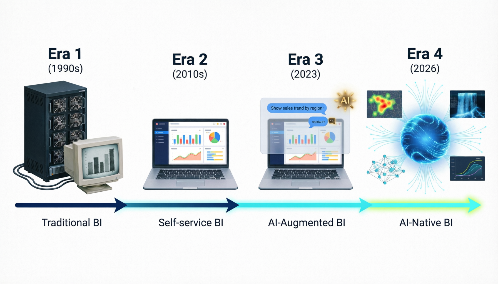
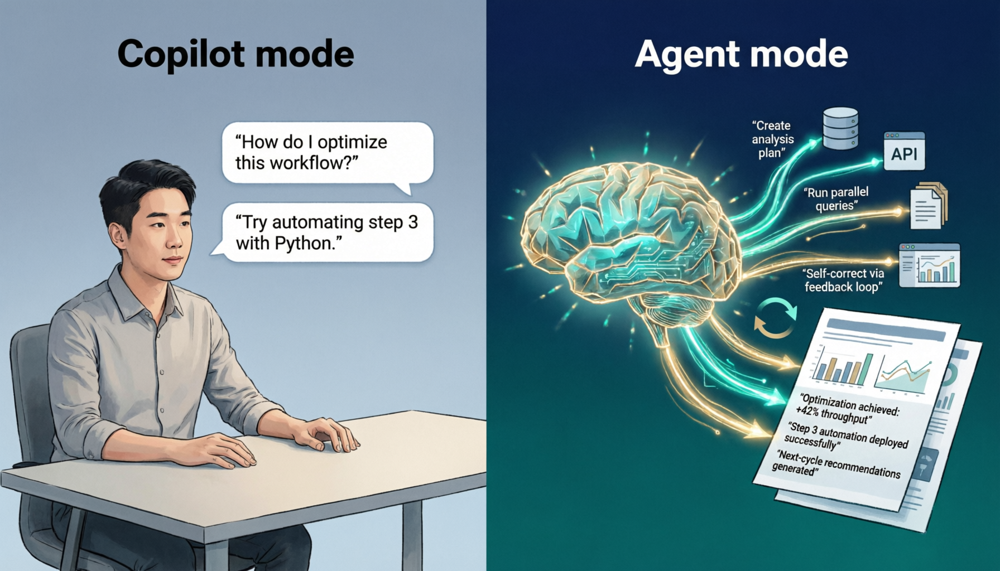
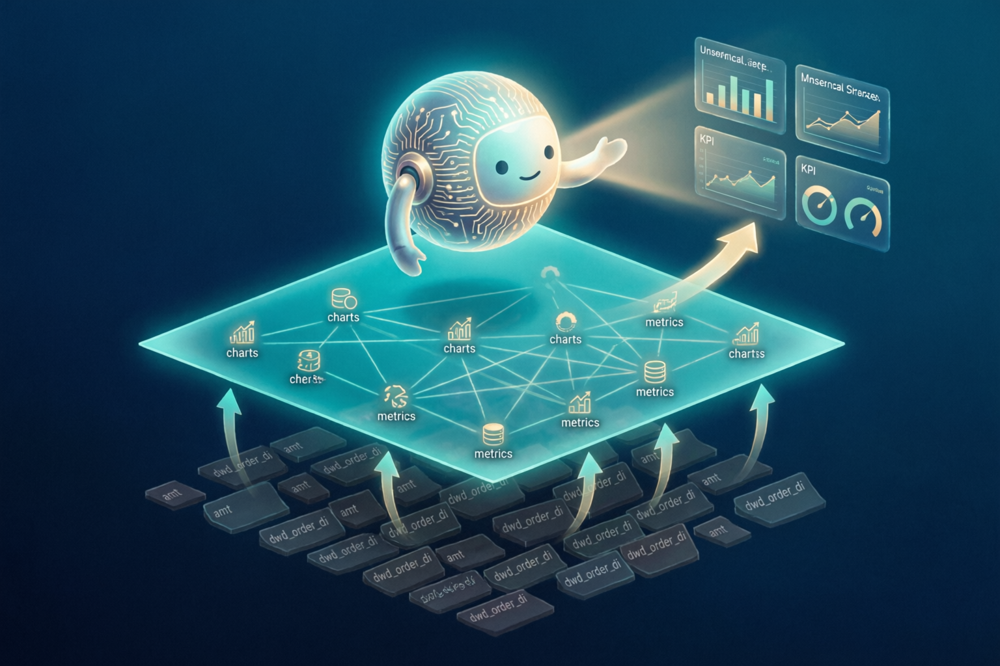
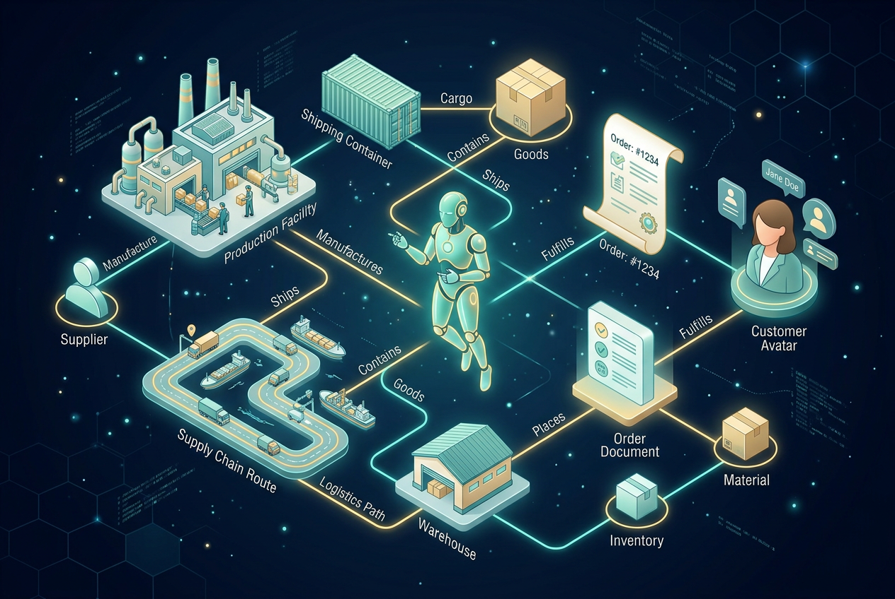
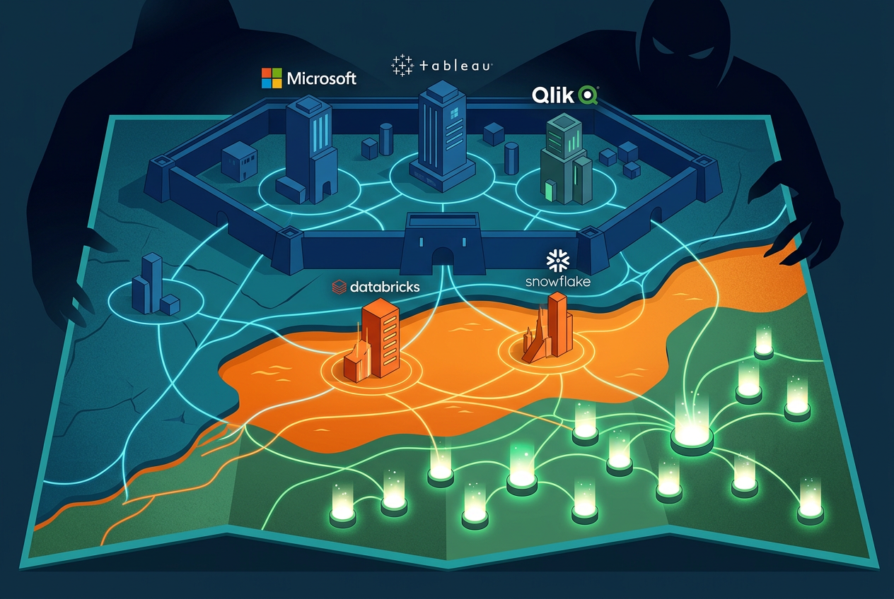
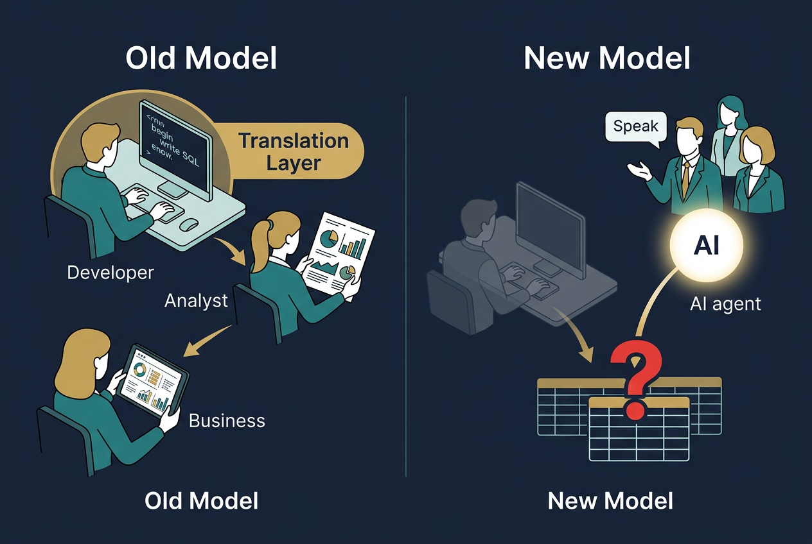
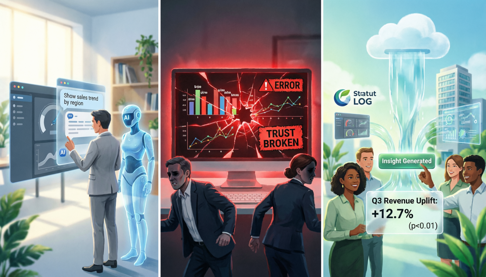

纵向分析：从报表工具到智能分析伙伴

BI产品四代演进：传统BI → 自助BI → AI增强BI → AI原生BI
2.1 一个词语和一种渴望
「Business Intelligence」这四个单词第一次被连在一起，不是在某个硅谷车库里，而是在1865年的一本书中。美国作家Richard Millar Devens在《Cyclopaedia of Commercial and Business Anecdotes》里描述了一位银行家——Sir Henry Furnese——如何比竞争对手更早获取并利用商业信息来做出决策。Devens用「business intelligence」来形容这种能力：在对手之前知道发生了什么，然后据此行动。
这个定义放到今天依然精准得令人不安。一百六十年过去了，BI行业兜兜转转，追的还是同一件事：让对的人在对的时间拿到对的信息。
不过从一个文学性的概念到一个技术品类，中间隔了将近一百年。1958年，IBM研究员Hans Peter Luhn发表了一篇名为《A Business Intelligence System》的论文，第一次从技术角度定义了BI：一个能自动抽取、编码、存储和检索文档中信息的系统。Luhn构想的是某种自动化的信息管理机器，离我们今天理解的BI还很远，但种子已经埋下了。
真正让BI成为一个产业的，是另一个人。1989年，Gartner分析师Howard Dresner把BI重新定义为「利用基于事实的支持系统来改善商业决策的概念和方法」，并开始用这个词来描述一整类软件产品。Dresner做的事情，相当于给一个模糊的想法贴上了商品标签——从此，BI从一种能力变成了一个可以购买的东西。
在Dresner之前，类似的技术叫「决策支持系统」（DSS）或「高管信息系统」（EIS）。这些名字听起来都像是只有穿西装的人才能接触的东西——事实也确实如此。早期的决策支持系统运行在大型机上，需要专门的IT人员维护，只服务于公司最高层。一个普通的业务经理想看一个销售数据？排队等IT部门出报表吧。
这个「IT出报表，业务等报表」的模式，将主宰接下来二十年的BI行业。
2.2 传统BI的黄金时代：用钱能买到的确定性
1990年代到2000年代中期，是传统BI厂商的黄金年代。这个年代有三个王者：SAP Business Objects、IBM Cognos、Oracle BI。它们的共同特征是——贵、重、慢，但可靠。
这些产品的典型架构是这样的：底层是一个数据仓库（通常也是SAP或Oracle自家的），中间是一层ETL（数据抽取、转换、加载）管道，上面是报表和OLAP（在线分析处理）引擎。一个企业要跑通这套东西，少则几十万美元，多则上千万美元的投入是常事。部署周期以年计算。
但企业愿意买单，因为这些系统提供了一种确定性。在数据质量有保障的前提下，报表出来的数字是经过IT验证的、可审计的、可追溯的。这种确定性在金融、制造、零售等行业至关重要——你不能用一个「差不多对」的数字去做合规报告。
然而痛点也很明显。2004年Gartner的一份调查显示，BI项目的满意率不到30%。核心矛盾不是技术不行，而是整个交互模式出了问题：业务部门有100个问题想问，IT部门的报表开发排期只能覆盖10个。剩下的90个问题，要么被搁置，要么业务人员自己用Excel凑合。Excel因此成了全世界用户量最大的「BI工具」——不是因为它好，而是因为它是唯一不需要IT批准就能用的东西。
这个矛盾积累到了一个临界点。
2007年发生了一件标志性的事：SAP以68亿美元收购Business Objects，Oracle以33亿美元收购Hyperion，IBM以50亿美元收购Cognos。三大ERP巨头在同一年完成了对三大独立BI厂商的收购。这看起来像是传统BI的巅峰时刻——巨头们花了超过150亿美元来巩固这个市场。但回头看，这更像是一个时代的墓志铭。当大公司开始用收购来回应变化时，通常意味着它们已经感受到了威胁的气息。
威胁来自一个完全不同方向的产品理念：如果不需要IT，业务人员自己就能分析数据呢？
2.3 自助BI革命：把权力交到非技术人员手中
2003年，Stanford大学计算机科学系的三位学者——Chris Stolte、Pat Hanrahan和Jock Mackinlay——创办了一家公司。Hanrahan是Pixar的联合创始人，他在计算机图形学上的造诣极深。Stolte的博士论文研究的是如何用可视化的方式来探索数据库。他们做出了一个叫VizQL的技术，让用户通过拖拽字段就能自动生成数据可视化——不用写SQL，不用等IT。
这家公司叫Tableau。
Tableau的核心洞察不是技术上的，而是人性层面的：大多数需要用数据做决策的人，不会写代码，也不应该被要求学写代码。他们需要的是一种「视觉化思考数据」的方式，就像人天然用眼睛来理解世界一样。
差不多同一时期，另一条路线也在发育。Qlik Technologies的前身QlikTech早在1993年就成立于瑞典隆德，它的核心技术是内存关联引擎——把所有数据加载到内存中，让用户通过点击任何一个数据点来实时探索关联关系。Qlik的理念是「数据之间的关系应该是可点击的」。2010年Qlik在纳斯达克上市时，已经拥有超过2万个客户。
然后是微软。2015年，Power BI以免费版的姿态杀入市场。微软做了一件传统BI厂商不愿意做的事——把价格打到了几乎为零（Power BI Pro每用户每月9.99美元，Desktop版本完全免费）。考虑到Power BI可以无缝对接Excel、Azure、Teams等微软生态，这个定价策略几乎是不可抗力。到2024年，Power BI的月活用户已经超过3000万。
这三家——Tableau、Qlik、Power BI——构成了自助BI革命的三驾马车。它们打碎了传统BI「IT驱动」的模式，把分析权交到了业务人员手中。
Gartner的魔力象限忠实地记录了这场权力转移。2013年之前，象限右上角（Leaders区域）还站着SAP、IBM、Oracle这些巨头。到2016年，Leaders区域已经完全被Tableau、Qlik、Microsoft占据。传统巨头们被挤到了左下角——不是因为它们的产品变差了，而是市场评价标准变了。「易用性」和「分析师自主性」取代了「企业级管控」和「大规模部署能力」成为首要评判维度。
但自助BI也有自己的问题。把权力交给业务人员的副作用是——每个人都在自己的角落里做分析，数字对不上。同一个指标，市场部算出来是1000万，财务部算出来是800万，差异在于口径定义不同、数据源不同、计算逻辑不同。企业花了几年时间推广自助分析，又花了几年时间来治理「数据口径混乱」的后遗症。
这为后来「语义层」概念的兴起埋下了伏笔。
2.4 中国BI的平行宇宙
中国BI市场有自己的时间线。
帆软是这个市场最重要的名字之一。2006年成立，核心产品FineReport和FineBI分别面向报表和自助分析场景。帆软走的是一条非常务实的路——它没有追Tableau那种「让每个人都成为数据分析师」的理想主义叙事，而是把「中国式报表」做到了极致。中国企业对报表的需求跟美国不一样：复杂的中国式报表（交叉表、分组嵌套、审批流集成）是刚需，简洁的仪表板反而是锦上添花。帆软抓住了这个痛点，到2023年IDC的报告里，帆软以25%的市场份额排名中国BI市场第一。
永洪科技2012年成立，拿过腾讯投资，定位是「一站式数据分析和BI平台」，强调大数据场景下的高性能查询。观远数据2016年成立，从一开始就打「AI+BI」的标签，在零售、消费品领域有不错的落地案例。
然后是Quick BI。作为阿里云旗下的BI产品，Quick BI有一个独特的优势——云原生，天然跟阿里云的数据生态（MaxCompute、DataWorks、Hologres）打通。从2019年开始，Quick BI连续多年入选Gartner全球BI魔力象限，是唯一进入这个象限的中国BI产品。这个「唯一」很关键：它意味着在Gartner的全球视野中，Quick BI是中国BI产品里唯一被认为具备国际竞争力的。
中国BI市场的另一个特点是「国产替代」浪潮。2020年以后，越来越多的政府和国企开始要求用国产软件替代SAP BO、Tableau等外资产品。这为国产BI厂商创造了一波巨大的增长机会，但也带来了一个隐忧：当增长由政策驱动而非产品力驱动时，产品创新的动力可能会打折。
不过这个担忧在2023年之后变得不那么重要了。因为一个更大的变量出现了——大语言模型。
2.5 Augmented Analytics：AI介入的前奏
在LLM把所有人炸醒之前，AI进入BI的故事其实已经悄悄讲了好几年。
2012年，一家叫ThoughtSpot的公司在Palo Alto成立。创始团队来自Google（包括Google Urchin/Analytics的创始成员），他们的核心理念是：既然人们已经习惯了在Google搜索框里用自然语言找信息，为什么不能用同样的方式来查询企业数据？ThoughtSpot做了一个搜索驱动的分析界面——用户在搜索框里输入「上个月华东地区的销售额」，系统自动理解语义，生成查询，返回可视化结果。
这个产品理念在2012年极其超前。当时的NLQ（Natural Language Query）技术还很原始，基于关键词匹配和预定义的语义映射，能处理的查询模式非常有限。ThoughtSpot不得不花大量功夫去做搜索算法优化、数据建模和语义层构建，才能让它的搜索体验勉强达到可用水平。
2017年，Gartner分析师Rita Sallam正式提出了「Augmented Analytics」（增强分析）的概念，并预测它将成为下一代BI的核心特征。增强分析的定义是：利用机器学习和AI来辅助数据准备、洞察发现和分析解释的全过程。具体来说，它包含三个层次：自动数据准备（AI帮你清洗和整理数据）、自动洞察发现（AI主动发现数据中的异常和模式）、自然语言交互（用自然语言而非SQL来查询和理解数据）。
Gartner的这个概念框架极其重要，因为它给行业定了调：AI在BI中的角色不是取代分析师，而是增强分析师。这个「增强」的定位在当时是合理的——2017年的AI确实还做不到取代人类分析师。但它也在某种程度上限制了行业的想象力：大家都在想怎么用AI「辅助」已有的仪表板和报表流程，很少有人去想AI是否应该彻底替换掉这些流程。
与此同时，学术界在NL2SQL（自然语言转SQL）这个关键技术上稳步推进。2017年，Salesforce发布了WikiSQL数据集，包含8万多个自然语言-SQL配对——这是第一个大规模的NL2SQL训练数据集。2018年，耶鲁大学发布了Spider数据集，引入了跨数据库、多表联合查询等更复杂的场景，成为NL2SQL的标准基准。到2023年，BIRD数据集进一步把挑战提升到了真实企业级的复杂度，包含大规模schema、噪声数据和模糊指令。
NL2SQL的学术进展就像是在为后来LLM的介入修一条高速公路——路基打好了，只等一辆足够快的车开上来。
2.6 LLM引爆：所有人同时按下重启键
2022年11月30日，ChatGPT发布。然后一切都变了。
变化的速度快到让人来不及反应。从2023年3月开始，BI行业像是中了某种传染病，所有厂商几乎同时宣布自己的AI战略：
2023年3月，ThoughtSpot发布ThoughtSpot Sage，宣称是「第一个基于GPT的AI分析助手」，直接在搜索体验之上叠加了大语言模型的理解能力。用户可以用更自然、更模糊的语言来提问，系统能处理的查询复杂度大幅提升。
2023年5月，微软在Build大会上发布Copilot in Power BI——用户可以用自然语言描述想要的分析，Copilot自动生成DAX查询和可视化。这是Power BI有史以来最大的产品形态变化：从「用户拖拽字段」变成了「用户说话，AI干活」。
2023年9月，Tableau在Dreamforce大会上发布Tableau GPT（后来改名为Tableau Pulse和Tableau Einstein Copilot），号称要让AI贯穿数据准备、分析和可视化的全流程。
Google的Looker在2024年4月整合了Gemini，Databricks在2024年6月发布了AI/BI Dashboard和Genie（一个基于LLM的对话式数据分析Agent），Snowflake在2024年8月发布了Cortex Analyst。
而到了2026年，这些产品的迭代速度进一步加快，形态变化也越来越剧烈。Salesforce对Tableau做了一次史诗级的产品重写——推出Tableau Next，一个从零开始构建的全新平台。Tableau Next取消了Desktop客户端，所有操作完全在浏览器中完成；取消了Workbook概念，代之以独立的可视化、仪表板和语义数据模型（SDM）；最关键的是，它将「Tableau Semantics」设为强制性语义层——所有分析、所有Agent的工作都必须经过这一层统一治理的语义模型。Tableau CEO Ryan Aytay将其定义为「全球第一个Agentic Analytics平台」。
国内方面，Quick BI的智能小Q在2023年完成了一次关键升级——从规则引擎驱动的NLQ切换到大语言模型驱动。Quick BI选择了一条双模型路线：通义千问作为基础能力底座，同时引入DeepSeek来增强某些复杂推理场景。官方宣称的NL2SQL准确率达到96.2%。
帆软的策略不太一样。FineBI没有一头扎进NL2SQL的军备竞赛，而是选择了一种叫「Text2DSL」的路线——不是把自然语言直接翻译成SQL，而是翻译成帆软自定义的领域特定语言（DSL），再由DSL引擎去执行。这个选择背后的逻辑是：帆软的客户很多是传统行业，对「AI回答的准确性」的容忍度极低。DSL相比SQL更加受控、可预测，虽然灵活性差一些，但出错的概率也更低。
这里值得停下来想一个问题：为什么所有厂商几乎同时动手了？
答案不只是「ChatGPT火了所以跟风」这么简单。更深层的原因是，LLM解决了NL2SQL的一个根本性瓶颈——语义理解。在LLM之前，NL2SQL系统需要针对每个数据库手工构建语义映射（「销售额」对应表A的字段B，「增长率」是字段C除以字段D）。这个过程极其耗时，而且一旦数据模型变了就要重新来过。LLM天然具备语义理解能力，它可以根据schema描述和少量示例，在很大程度上自动完成这种映射。
换句话说，LLM不是在已有的路上提速了，它是修了一条新路。
一个关键数字：前沿LLM在学术基准测试（Spider 1.0）上的NL2SQL准确率达到了85%以上，但在真实企业环境中（Spider 2.0），GPT-4o的准确率只有10.1%。
85%和10%之间的鸿沟，是理解当下AI BI竞争格局的钥匙。
2.7 从Copilot到Agent：BI的第四种形态
如果说2023年是「BI+LLM」的元年，那2024-2025年正在发生的事情是一次更深层的形态变化：从Copilot到Agent。

范式跃迁：从「一问一答」的Copilot模式到「自主研究」的Agent模式
Copilot是你问一句，它答一句——本质上是一个更智能的搜索框。
Agent则不同：你给它一个目标（比如「分析一下我们华东区的销售下滑原因」），它会自主规划分析路径，查询多个数据源，尝试不同的分析角度，自我验证结论，最终输出一份包含洞察和建议的报告。这不再是「辅助分析」，而是「自主分析」。
2024年11月，ThoughtSpot发布了Spotter——一个由四个专业Agent组成的协同系统。Spotter本体负责自然语言分析，SpotterViz负责自动生成最优可视化，SpotterModel负责管理语义模型，SpotterCode负责执行复杂计算。四个Agent各司其职、互相协作，覆盖了从提问到洞察的完整链路。进入2026年，ThoughtSpot密集发布了三个重磅更新：2月的Analyst Studio（含SpotCache缓存层和Agentic Data Prep），将分析师工作台从仪表板驱动推向Agent驱动的数据管理；3月12日的Spotter Semantics，一个基于知识图谱的Agentic语义层，将业务逻辑、安全规则、指标定义整合为统一的语义基础设施；3月18日的Spotter for Industries，面向医疗、零售、金融等9个行业推出预置Agent，试图用行业专有知识弥合通用AI的「上下文鸿沟」——MIT的研究显示95%的组织从AI项目中获取不到任何价值，ThoughtSpot认为根源就在于通用AI缺乏行业特定语境。
2024年9月，Tableau宣布了Tableau Agent——不再只是帮你画图，而是能自主决定该分析什么、怎么分析。Salesforce CEO Marc Benioff在发布会上说了一句话：「The age of the dashboard is over.」仪表板的时代结束了。这话说得有点绝对，但方向是对的。2026年Tableau Next将Agent拆分为三个协同角色：Data Pro（数据准备，自动清洗和建模）、Concierge（自然语言问答，已于2026年2月正式GA）和Inspector（主动监控，预测性预警）。三个Agent不是孤立的聊天机器人，而是能互相传递上下文、并触发下游业务动作——从洞察到行动的闭环。
Quick BI也在往Agent化方向走。2025年，Quick BI上线了四大Agent能力：问数Agent（自然语言智能问答，自动选择最优方式查数据）、报告Agent（自动生成数据分析报告）、解读Agent（对关键指标进行深度数据洞察，支持「为什么」类型的归因分析）和发现Agent（主动探索数据，发现潜在的业务洞察）。
衡石科技则提出了一个更尖锐的区分：ChatBI只是「帮人查数据」，Agentic BI是「替人建数据基建」。ChatBI本质上还是一个更聪明的搜索框——你问一句，它答一句。但在真实的企业场景中，面对异构数据源、脏数据、复杂模型和精细权限管控，这种简单的一问一答极易出现幻觉与逻辑断裂，形不成完整的工程闭环。真正的Agentic BI把大模型从「自然语言翻译官」升级为「全局调度器」——自主完成数据探查、语义模型固化，根据数据库报错自动重试与自愈，接管整条数据工程流水线。衡石从2016年成立以来专注嵌入式BI场景（将BI能力内嵌进ISV伙伴的SaaS产品），2026年推出HENGSHI CLI，让Agent可以像工程师一样通过命令行操作BI平台的全部能力。
这个区分非常关键：它意味着ChatBI是一个功能，不是一个产品。所有BI厂商都会有ChatBI，就像所有手机都有摄像头一样——有它不是竞争优势，没有才是劣势。真正的竞争在于ChatBI背后的架构深度：语义引擎的厚度、Agent的自主性边界、与企业级管控体系的融合程度。
与此同时，一批完全不同的物种开始出现——AI-Native BI。
这些产品不是在已有的BI产品上「加AI」，而是从AI出发重新设计整个产品。Julius AI是其中的代表：没有传统的仪表板编辑器，没有拖拽式的字段面板。你上传一个数据文件，用自然语言告诉它你想了解什么，它直接给你分析结果。到2025年初，Julius AI已经积累了超过200万用户。
我的判断是：短期内仪表板不会消失，但长期来看，仪表板会退化为「一种输出格式」而非「核心交互界面」。就像报纸没有完全消失，但「每天早上读报纸获取信息」的范式已经被手机推送取代了一样。
2.8 语义层：被低估的关键战场
在AI BI的喧嚣中，有一个不那么性感但极其重要的技术层被严重低估了——语义层（Semantic Layer）。
语义层是什么？简单说，它是业务语言和数据库语言之间的翻译层。当一个用户问「上季度华东区的销售增长率」的时候，「上季度」是哪个时间范围？「华东区」对应数据库里的哪个字段和哪些值？「销售增长率」的计算口径是什么？这些定义都存放在语义层中。
到了AI BI时代，语义层突然变得比以往任何时候都更重要。原因很直接：LLM需要语义层来理解业务含义。没有语义层，LLM面对一个包含几百张表、几千个字段的企业数据库，能做的只是猜——而猜的准确率就是那个令人沮丧的10%。

语义层：在底层数据混沌与AI业务理解之间架起桥梁
过去十年，企业的数据治理体系建立在一个基本假设上——数据的消费者是人。链条很清晰：开发人员写SQL，分析师做报表，业务人员看Dashboard。数据从底层到用户之间，有一层「翻译层」——开发人员。他们理解数据的含义，知道哪些字段有坑，在加工过程中修正瑕疵、美化输出。
但现在，AI Agent闯入了这条链路。业务人员不再打开报表系统，而是直接用自然语言提问。Agent接到问题后，自主解析意图，直接查询底层数据。那层靠开发人员兜底的翻译层被绕过了。
这意味着什么？你数仓里有个字段叫amt，开发团队约定俗成知道这是「每日订单明细表的金额字段」，但这个约定从没写进元数据——因为「大家都知道」。AI Agent不知道。它看到amt，不确定这是交易金额、退款金额还是含税金额。没有完整的元数据描述，AI就像一个入职第一天的新员工，面对一堆缩写和行话，完全懵了。
这个变化推导出一个结论：数据治理的核心，从「管住数据」升级为「让数据自解释」。过去那套「人能懂就行」的元数据标准，在AI时代彻底失效了。每张表、每个字段、每个指标都需要有完整的、AI可消费的语义描述——命名规范化、描述完整化、关系显性化、语义标准化。这四项不再是锦上添花，而是AI能否正确工作的前提条件。
以某零售企业的实践为参照：在完成200多个核心指标的语义标注后，AI Agent的查询准确率从约60%提升到了85%以上，业务人员自助取数的比例从不足20%提升到了55%。这个数据非常说明问题——语义治理的ROI是实实在在的。
Google Looker在这方面有一个先天优势。Looker从诞生之初就基于LookML——一个自定义的语义建模语言——来定义所有的数据关系和业务口径。Google官方声称，LookML的存在「将AI查询错误减少了三分之二」。
衡石科技的实践则指向了另一个更激进的方向：Headless BI。所谓Headless，是把语义引擎与前端可视化彻底解耦——语义层不再只是仪表板的附庸，而是一个独立的、可被任何AI Agent调用的语义服务。在此基础上，衡石提出指标定义应该升级为「企业业务本体论」：不只定义指标的计算口径，还要把业务规则、数据约束、使用场景、关联关系全部工程化地注入语义层，相当于给AI Agent提供一部完整的「企业业务百科全书」。
如果说LookML代表的是语义层1.0（代码化的指标定义），那这种「业务本体论」就是语义层2.0——语义层从一个辅助组件，升格为AI BI的操作系统。语义层的覆盖度和深度，直接决定了AI BI的能力上限。这正在成为行业共识。
这个观点最有力的验证来自BI行业之外。Palantir Technologies——那个从反恐情报分析起家、市值一度超过2500亿美元的「数据军火商」——在二十年前就押注了一个核心技术概念：Ontology（本体论）。Palantir的数据平台不把数据存为冷冰冰的行和列，而是将其映射为现实世界的对象——「工厂」「订单」「嫌疑人」「航线」——以及它们之间的关系和业务规则。当AI需要理解「如果飓风来袭，我的供应链会受什么影响」这类复杂问题时，Ontology让系统理解的不是表和字段，而是真实的商业逻辑。空客用它管理A350的全球产能，BP用它优化钻井效率，乌克兰用它整合战场情报。2023年推出的AIP更进一步：用户用自然语言提问，系统不仅给出答案，还能直接在系统中调度资源、下达指令——实现了从「Chat」到「Action」的跨越。
Palantir给整个AI BI行业的启示极其直白：算法本身不是壁垒，对业务场景的深刻理解和数据治理能力才是。只有将大模型与企业私有的「本体」数据相结合，并转化为实际的行动力，AI才能产生真正的商业价值。这跟BI行业正在发生的语义层竞争是同一个底层逻辑——谁能把企业的业务知识结构化、工程化、让AI可消费，谁就掌握了护城河。

Ontology：将数据从行列映射为现实世界的业务对象和关系网络
Gartner在2025年的报告中明确把语义层列为「must-do infrastructure」。2026年的预测更加激进：没有统一语义层的企业，其AI BI项目的失败率将高于60%。Gartner还预测到2028年，企业内超过33%的业务应用交互将嵌入AI Agent驱动；IDC的调研显示已有45%的亚太区企业开始在数据分析场景中试点AI Agent。数据消费的频次和主体都在剧变，语义层不是选修课，而是必修课。
横向分析：2026年AI BI产品竞争图谱

2026年AI BI竞争图谱：传统巨头、数据平台跨界者、AI原生新物种与跨界降维打击者
3.1 三大阵营
站在2026年4月这个时间截面上看，AI BI赛道的玩家大致可以分为三个阵营：
第一阵营：传统BI巨头的AI进化。 Microsoft Power BI、Tableau（Salesforce）、Qlik、Google Looker、ThoughtSpot。有庞大的存量客户基础，AI对它们来说是「在已有产品上长出来的新能力」。
第二阵营：数据平台厂商的BI渗透。 Databricks、Snowflake、AWS QuickSight。逻辑是「数据已经在我这里了，为什么还要搬到别的BI工具去分析？」
第三阵营：AI-Native新物种。 Hex（Notebook + Agentic分析）、Julius AI（纯对话式）、Equals（AI增强电子表格）、Wren AI（开源语义层驱动）、Basedash（SaaS数据集成）、Lightdash（dbt原生）、Defog AI（NL2SQL基础设施）。不带历史包袱，从AI出发重新设计产品。产品形态高度分化——对话、Notebook、电子表格、开源引擎各走各路，范式远未收敛。
值得警惕的跨界者：Palantir（从情报分析跨入商业BI）、Databricks AI/BI（从数据湖跨入分析层）。它们不自称BI产品，但其Foundry/AIP或AI/BI Dashboard正在做的事——把企业数据映射为业务对象、用自然语言驱动决策、从洞察直接连接行动——本质上就是下一代BI应该成为的样子。它们的存在提醒传统BI厂商：最大的竞争对手可能不在BI赛道内部。
国产阵营横跨第一和第二阵营：Quick BI（阿里云生态）、帆软FineBI（独立厂商）、衡石科技（嵌入式BI + Agentic BI先行者）、火山引擎Data Agent（字节跳动生态）、永洪BI、观远数据、网易有数。
3.2 关键玩家逐一解析
Microsoft Power BI + Copilot
Power BI是全球用户量最大的BI产品，月活超过3000万。Copilot是它的AI界面——在Power BI Desktop和Service中，用户可以通过自然语言对话来生成报表、创建DAX度量值、获取数据洞察。底层是GPT-4系列模型，通过Azure OpenAI Service调用。
优势很明显：生态。Power BI跟Excel的整合几乎是无缝的，跟Teams的整合意味着BI报表可以直接嵌入到工作聊天中。3000万月活带来的网络效应是其他产品难以复制的。
但真实用户的评价比微软的宣传冷淡得多。Reddit上一个高赞帖子的标题是「Power BI Copilot返回微妙错误的数据」——不是明显的报错，而是那种看起来对但实际不对的结果，比查询失败更危险。不过微软在2026年的迭代节奏很快：2月将Copilot输入限制从500字符提升到10,000字符，Copilot可以在App内自主导航找到正确的报表回答问题；3月推出了Translytical Task Flows——用户可以直接在报表中回写数据、触发外部系统的工作流，首次实现了从「看数据」到「改数据」的闭环。4月Power Platform更进一步开放了MCP协议，允许GitHub Copilot、Claude Code等外部AI编码工具直接创建Power Apps页面。
Tableau Next（Salesforce Agentforce）
2025年Tableau做了一个极其大胆的决定：从零开始重写整个产品。Tableau Next不是Tableau的升级版，而是一个全新平台——取消Desktop客户端，全部浏览器内操作；取消Workbook概念，用独立的语义数据模型（SDM）统一治理所有分析资产；强制通过「Tableau Semantics」语义层，所有Agent和可视化共享同一套业务定义。Salesforce将其定义为「世界上第一个Agentic Analytics平台」。
Tableau的AI战略围绕三个专业Agent展开：Data Pro（数据准备）、Concierge（自然语言交互，2026年2月GA）、Inspector（主动监控和预测性预警）。三者通过Salesforce Agentforce平台深度集成——Sales Cloud、Service Cloud里的Agent可以直接调用Tableau的分析能力，无需人工打开仪表板。优势在于Salesforce的CRM数据和客户360模型提供了天然的业务语境，在销售和客户分析场景中有独特的生态位。劣势是云原生只绑定Salesforce平台，定价高（需要Tableau+许可证），且产品重写意味着经典Tableau用户面临学习曲线的又一次陡增。
ThoughtSpot Spotter
如果说有一家公司是「AI BI」概念的原生践行者，那就是ThoughtSpot。它从2012年成立之初就赌「搜索驱动的分析」，在这条路上走了超过十年。当LLM出现的时候，ThoughtSpot不需要转型——它只需要把引擎升级。
2026年是ThoughtSpot产品密度最高的一年。2月的Analyst Studio更新推出了SpotCache（数据快照缓存，无限次查询不产生额外云计算费用——分析师Donald Farmer称其为「可能是最有价值的新功能」）和Agentic Data Prep（用自然语言驱动数据准备，而非传统的SQL或拖拽向导）。3月连续发布Spotter Semantics（基于知识图谱的Agentic语义层，使用专利搜索令牌技术生成确定性SQL，而非依赖LLM做文本到SQL的翻译）和Spotter for Industries（面向医疗、零售、金融等9个行业的预置Agent）。分析师Donald Farmer评价说：「每一次发布，ThoughtSpot的工作流都变得更少以仪表板为中心。」
ThoughtSpot在2025年Gartner魔力象限中首次进入Leaders区域，这是对它十年赌注的一次验证。但隐忧是市场规模——跟Power BI的3000万月活相比，ThoughtSpot的用户基数小了一两个数量级，数据飞轮效应弱得多。不过SpotCache解决了一个阻碍企业大规模采用的关键痛点——云查询成本不可预测，这可能加速其企业端渗透。
Google Looker + Gemini
Looker最独特的资产是LookML。这个自定义的语义建模语言要求所有的业务逻辑、指标口径都以代码形式定义。在AI时代之前，LookML被视为「学习门槛高」的缺点。但现在，它成了Looker最大的竞争优势——为AI提供了一份结构化的、可机器阅读的业务语义「地图」。Google声称LookML「将AI查询错误减少了三分之二」。
局限在于跟Google Cloud的深度绑定。多云环境中适用性受限。
Quick BI 智能小Q
Quick BI在AI BI方面的布局可以用「体系化」来形容。核心是四大Agent能力矩阵：智能小Q问数Agent（自然语言智能问答，底层采用通义千问 + DeepSeek双模型架构，官方宣称NL2SQL准确率96.2%）、解读Agent（对关键指标进行深度数据洞察，支持「为什么」类型的归因分析）、报告Agent（一键生成数据分析报告）和发现Agent（主动探索数据发现潜在业务洞察）。同时配套有四大Skill（问数、报表、解读、报告），以及开放平台13+个API，形成从自然语言交互到深度集成的完整能力体系。
独特优势在于跟阿里云数据生态的深度整合。2025年Gartner魔力象限中，阿里云（Quick BI）被列为Challenger——这是中国BI产品在全球最权威分析报告中达到的最高位置。局限是几乎只在阿里云生态内有意义。
帆软 FineBI
帆软是中国BI市场的「隐形冠军」——25%的国内市场份额。AI策略非常克制，采用Text2DSL路线——自然语言翻译成受控的DSL而非SQL，牺牲灵活性换取准确性和可控性。对于制造业的财务总监来说，这个取舍完全合理——他需要的是每个月的成本报表准确无误。帆软深谙这一点。
AI-Native新物种：深度解剖
「AI-Native」不是一个营销标签，而是一个产品设计哲学的分界线。传统BI巨头在成熟产品上嫁接AI能力——本质是给老建筑加电梯；AI-Native产品从第一行代码开始就假设AI是核心引擎——相当于直接设计一栋带电梯的新建筑。这两种路径的差异不仅体现在用户体验上，更深刻地影响了它们处理企业数据连接、安全管控和治理问题的方式。
火山引擎 Data Agent（字节跳动）：生态加持的AI-Native降维打击
火山引擎Data Agent是字节跳动在AI BI赛道的最新落子。2025年8月在DataFun AI+BI智能驱动峰会上正式亮相，定位为「新一代智能数据分析产品」——不做传统BI的升级版，而是要做企业级的「数据决策大脑」。
Data Agent的核心架构采用「Plan+React」双阶段机制：先完成意图解析与上下文补全以制定执行计划，随后动态调度查询、检索与计算模块，构建从问题定义到策略输出的完整闭环。功能上提供描述性、诊断性、预测性、指导性四维分析——不仅回答「是什么」，还回答「为什么」「会怎样」「该怎么做」。已在饮品研发、电商运营、金融营销等场景试点落地，甚至试点将会议记录等非结构化隐性知识融入分析链路——这在BI产品中是少见的尝试。
Data Agent在报告中被归入AI-Native阵营，原因在于它的产品设计哲学与传统BI厂商截然不同。Quick BI、帆软、甚至ThoughtSpot和Tableau，都是在已有的BI产品上「加AI」——保留仪表板、报表、可视化编辑器这些传统界面，AI作为增强层长在上面。而Data Agent从第一天起就没有仪表板编辑器，没有拖拽字段的面板，没有「先建模型再出报表」的流程——它假设AI是核心引擎，一切围绕自然语言交互和自主分析来设计。它不是BI+AI，它是AI-first的数据分析产品。
但它与Julius AI这种纯AI-Native产品也有本质不同。Julius AI是一个独立创业公司，背后没有数据平台、没有大模型、没有企业生态。而Data Agent的背后是字节跳动的完整基础设施：数据层（火山引擎大数据平台已服务大量企业客户）、模型层（豆包大模型持续迭代，且字节在推荐/搜索/多模AI领域有十年积累）、协作层（飞书已覆盖大量中大型企业）。这三层的组合，让Data Agent具备了AI-Native阵营中其他玩家都不具备的「生态降维」能力。
这对Quick BI的启示非常直接。Data Agent与Quick BI的竞争，本质上是飞书生态 vs 钉钉生态在数据分析入口上的争夺。字节跳动的To B战略是「飞书做协作入口，火山引擎做数据智能底座」——这个组合一旦深度打通，「在飞书里直接问数分析」的体验将对标甚至超越Quick BI在钉钉中的@智能小Q。而且字节在AI大模型上的投入规模和迭代速度，可能超过大多数人的预期。Quick BI需要认真思考：在钉钉生态的护城河之上，自己的AI能力底座是否足够领先？语义层建设是否足够深厚？当两个生态在同一个维度上正面竞争时，最终决定胜负的不会是「谁先在钉钉/飞书里放了一个对话框」，而是「谁的语义引擎更懂业务」「谁的Agent自主性更高」「谁的ROI量化能力更强」。
Hex：从Notebook到Agentic Analytics平台
Hex是这个阵营中融资最多、产品成熟度最高的玩家。2025年5月，Hex完成了7000万美元的C轮融资（Avra领投），累计融资超过1.7亿美元。同年，它收购了可视化分析工具Hashboard，补全了仪表板能力。到2026年，Hex已经从一个「分析师的协作Notebook」进化为一个全栈Agentic Analytics平台。
Hex的产品设计哲学可以概括为：把AI嵌入分析师的工作流，而不是用AI替代分析师。它的核心产品线包含三个层次：
Threads（线程）——面向非技术用户的对话式分析界面。用户用自然语言提问，Threads自动在后台生成SQL或Python代码并执行。但跟Julius AI这种纯对话式产品不同，Threads生成的每一步分析都可以被打开、检查、编辑——对话只是入口，底层逻辑完全透明。
Notebook Agent——面向数据分析师和工程师的AI协作引擎。它能在Hex的Notebook环境中自动编写、调试和运行SQL/Python代码，理解上下文中的数据模型和之前的分析步骤。分析师不需要从零写代码，而是在AI生成的草稿上迭代。
Context Studio——这是Hex在AI治理方面最值得关注的设计。Context Studio允许管理员为AI系统预配置「上下文」——哪些数据表是核心的、业务术语的标准定义是什么、哪些查询模式是被推荐的。本质上，它是一个AI行为治理层：不是事后审核AI的输出，而是事前约束AI的输入。这与ThoughtSpot的Spotter Semantics和衡石的「业务本体」异曲同工——都在试图给AI建一个「可信的知识围栏」。
在企业数据连接方面，Hex支持直连Snowflake、Databricks、BigQuery、Redshift、PostgreSQL等主流云数据仓库和数据库，同时也对接dbt语义层。2026年，Hex发布了MCP Server，允许Claude、Cursor等外部AI Agent直接调用Hex中的分析资产——这意味着Hex不只是一个分析工具，也可以作为其他AI系统的「分析后端」。
在安全和企业治理方面，Hex做到了AI-Native阵营中最高的标准：SOC 2 Type II认证、HIPAA合规（支持医疗行业数据）、SSO/SCIM企业认证集成、多租户架构、EU数据驻留选项。这些不是花哨的功能，而是企业CIO签采购单的前置条件。Hex在这个维度上的投入，反映了它从「分析师的玩具」向「企业级分析平台」的转型野心。
Julius AI：极简主义的极限实验
Julius AI是AI-Native BI光谱中最极端的一个样本。它的界面就是一个对话框——没有仪表板编辑器，没有字段拖拽面板，没有数据建模工具，甚至没有传统意义上的「项目」概念。你上传一个CSV或Excel文件，用自然语言告诉它你想了解什么，它直接返回分析结果和可视化。到2025年初，Julius AI累计用户超过200万。
这个设计背后的赌注是：如果AI足够聪明，整个BI产品的复杂性都是多余的。在消费者和个人分析场景中，这个赌注可能是对的——一个学生用Julius AI分析论文数据，一个自由职业者用它看销售趋势，体验确实比打开Power BI流畅得多。
但在企业场景中，Julius AI暴露出了AI-Native极简路线的结构性局限。截至2026年4月，Julius AI的数据接入仍以文件上传为主（CSV、Excel、Google Sheets），缺乏对企业数据仓库（Snowflake、BigQuery、Redshift）的原生直连能力。没有语义层，没有指标定义管理，没有行列级权限控制，没有审计日志——这些在传统BI中被视为「基础功能」的能力，在Julius AI的产品中几乎看不到。
Julius AI的困境代表了一个更普遍的命题：在BI领域，「简单」和「企业级」之间存在一道鸿沟，目前还没有产品能同时跨越两边。去掉复杂性很容易，但那些复杂性之所以存在，往往是因为企业级场景真的需要它。权限管理不是因为传统BI产品经理喜欢复杂，而是因为金融行业有合规要求；指标口径统一不是技术洁癖，而是因为CFO不允许两份报表的收入数字不一致。
Equals：电子表格的AI复兴
Equals做了一个在2024年听起来几乎逆潮流的选择——把电子表格作为AI BI的核心界面。它的核心产品不是对话框也不是Notebook，而是一个增强版的电子表格，可以直连企业数据库（PostgreSQL、MySQL、Snowflake、BigQuery、Redshift），把查询结果直接灌入表格中进行分析。
2025年下半年，Equals进行了一次重大的战略聚焦：从泛用型BI工具收窄为SaaS GTM（Go-to-Market）分析平台——主要服务SaaS公司的销售、市场和客户成功团队，预置了ARR（年化收入）、Churn（流失率）、NDR（净收入留存）、Cohort分析等SaaS核心指标模板。这个决策背后的逻辑是：与其在泛用BI市场跟Power BI和Tableau正面竞争，不如在一个垂直领域做到最好。
Equals的AI能力在2026年集中体现在它的「Analyst」Agent上。跟一般的ChatBI不同，Analyst不是简单地回答你的问题——它会主动构建一个完整的电子表格分析模型。比如你说「帮我分析上季度的客户流失」，Analyst不只是返回一个数字，而是创建一个包含流失率趋势、按产品线分解、按客户规模分层的多维分析表格，用户可以在此基础上继续细化。这种「不是给你答案，而是给你一个分析工具」的设计思路，可能比纯对话式更适合严肃的商业分析场景。
Equals的融资规模（a16z领投的A轮，累计约2300万美元）和团队规模（约35人）都远小于Hex，安全合规做到了SOC 2 Type II和企业SSO（Business tier，$2,000/月），但在更细粒度的数据治理方面（行列级权限、审计追踪、数据血缘）仍然弱于传统BI。Equals的赌注是：在中小型SaaS公司这个细分市场，电子表格的直觉性 + AI的自动化 + 垂直领域的专业性，可以形成一个有吸引力的独特组合。
Wren AI：开源语义层的另一种可能
如果说前面三个产品代表了AI-Native BI在商业化上的不同路径，Wren AI则代表了一种完全不同的思路：开源。Wren AI是一个开源（AGPL协议）的Text-to-SQL引擎，在GitHub上积累了超过15,000颗星。它的核心理念是：NL2SQL的准确性瓶颈不在模型，而在语义层——如果给AI一份足够好的「数据地图」，即使是普通的LLM也能生成准确的查询。
Wren AI的语义层设计叫MDL（Modeling Definition Language）——一种类似LookML但更轻量的语义建模语言。用户通过MDL定义表之间的关系、业务指标的计算逻辑、字段的语义描述。AI在生成SQL时，不是面对原始的数据库schema，而是面对经过MDL注释的「业务视图」。这在方法论上与ThoughtSpot的Spotter Semantics、Google Looker的LookML是同一个方向——语义层作为AI和数据之间的桥梁。
在数据连接方面，Wren AI支持超过15种数据源：PostgreSQL、MySQL、SQL Server、ClickHouse、BigQuery、Snowflake、Databricks、Trino、DuckDB等。底层使用Apache DataFusion作为查询引擎，可以在不直接暴露原始数据库凭证的情况下完成查询。LLM层面，Wren AI是模型无关的——支持OpenAI、Claude、Gemini、以及通过Ollama运行的本地开源模型。这意味着对数据安全极度敏感的企业可以选择完全私有化部署：自托管Wren AI + 本地Ollama模型，数据不出内网。
这个「完全可控」的特性是Wren AI的核心差异化。在金融、医疗、政府等行业，把企业数据发送给外部LLM API是一个不可逾越的合规红线。Wren AI的架构允许这些企业在不触碰这条红线的前提下使用AI BI能力。商业版起步价$179/月。
Basedash：从数据库管理面板到AI-Native BI
Basedash的故事是AI-Native阵营中最典型的一个「枢轴转向」案例。它2020年从Y Combinator的S20批次毕业时，做的是一个数据库管理面板工具——让非技术人员可以浏览和编辑数据库中的记录。2024年前后，Basedash大幅转向AI-Native BI，核心产品变成了一个用自然语言驱动的分析平台。
Basedash在数据连接上走了一条跟其他AI-Native产品截然不同的路：通过Fivetran集成了750+个SaaS数据源。这意味着它不需要用户手动配置数据库连接——Stripe的交易数据、HubSpot的CRM数据、Shopify的订单数据、Google Analytics的流量数据，都可以一键接入。对于「数据散落在二十个SaaS工具中」的中小企业来说，这个设计比「请输入你的Snowflake连接字符串」友好得多。
Basedash在2024年达到了100万美元的ARR，价格区间$250-$1,000/月。安全方面做到了SOC 2 Type II认证。但跟Hex相比，它在企业治理方面的能力（行列级权限、HIPAA、数据血缘）还有明显差距。Basedash的定位更像是「中小企业的AI数据分析师」——不做最复杂的事，但把最常见的分析场景做到极简。
其他值得关注的AI-Native玩家
Lightdash——开源、dbt原生的BI工具。它的核心优势是与dbt语义层的深度集成：dbt已经定义了指标和维度，Lightdash直接消费这些定义来驱动可视化和AI查询。对于已经投入dbt生态的数据团队来说，Lightdash是阻力最小的AI BI选择。
Defog AI——走的是AI基础设施路线，而非终端用户产品。它的核心产品是SQLCoder系列开源模型——专门为Text-to-SQL任务微调的小型语言模型。SQLCoder 8B在多个基准测试中超过了GPT-4的NL2SQL能力，同时成本低两个数量级。Defog的商业模式不是卖BI工具，而是卖NL2SQL能力给其他BI厂商——某种程度上它是AI BI生态中的「芯片供应商」。
Evidence.dev——「BI-as-Code」的代表。所有分析都以Markdown + SQL文件的形式存在，用Git做版本管理。这意味着数据分析可以像代码一样被review、测试、回滚。这种模式天然适合工程文化很强的科技公司，但对非技术用户完全不友好。
一个警示信号：Zing Data在2025年末关闭。Zing主打「移动端优先的AI BI」，但最终未能找到足够大的市场。这提醒我们：AI-Native BI的试验田上不全是成功者。在企业市场中，「有AI」远远不够——产品需要在AI体验的新颖性和企业需求的严肃性之间找到平衡。
AI-Native阵营的结构性挑战：一张比较地图
把这些AI-Native产品放在一起看，它们的产品设计分歧比预想中大得多——对话、Notebook、电子表格、开源引擎、SaaS集成，各走各路。但它们面对的共同挑战是一致的：如何从「个人玩具」或「团队工具」升级为「企业级平台」。这个升级不是加几个功能的问题，而是整个产品哲学的重构——从「AI能做什么」到「企业允许AI做什么」的思维转换。
| 维度 | Hex | Julius AI | Equals | Wren AI | Basedash |
|---|---|---|---|---|---|
| 核心界面 | Notebook + Threads对话 | 纯对话框 | 增强电子表格 | 对话 + SQL编辑器 | 对话 + 自动仪表板 |
| 产品哲学 | AI增强分析师 | AI取代分析工具 | AI增强电子表格 | 开源语义层驱动 | AI简化数据接入 |
| 目标客群 | 中大型企业数据团队 | 个人 / 学生 / 小团队 | SaaS公司GTM团队 | 数据工程师 / 安全敏感企业 | 中小企业运营团队 |
| 数据连接 | 直连数仓 + dbt + MCP | 文件上传为主 | 直连数据库（6+种） | 15+数据源原生支持 | 750+ SaaS（via Fivetran） |
| 语义层 | Context Studio | 无 | 弱（模板驱动） | MDL（强） | 弱 |
| 安全合规 | SOC2 II + HIPAA + SSO/SCIM | 基础 | SOC2 II + SSO | 可完全私有化部署 | SOC2 II |
| 行列级权限 | 支持 | 不支持 | 有限 | 支持（自托管） | 有限 |
| LLM策略 | 多模型 + MCP开放 | 多模型 | 多模型 | 模型无关 + 本地Ollama | 多模型 |
| 融资规模 | $170M+ | 未公开（用户200万+） | $23M（a16z） | 开源（AGPL） | YC S20 + 种子轮 |
| 定价 | 联系销售 | 免费 + 付费 | $2,000/月（Business） | $179/月起（商业版） | $250-$1,000/月 |
这张表揭示了一个清晰的分化趋势：AI-Native阵营正在分裂为两个子阵营。一边是「企业化派」（以Hex为代表），正在补齐安全、治理、语义层等企业能力，试图正面挑战传统BI巨头的客户群；另一边是「场景化派」（以Equals、Basedash为代表），放弃通用市场，在垂直场景中用极致体验建立壁垒。Julius AI和Wren AI则各自占据光谱的两个极端——前者追求极简到底，后者追求可控到底。
这种分歧本身就说明：AI BI的产品形态还远未收敛。我们可能正在经历类似2004-2008年「自助BI百花齐放」的阶段——Tableau、QlikView、Spotfire各走各路，最终用了十年才收敛出「拖拽式可视化」这个主流范式。AI-Native BI的范式收敛可能需要同样长的时间。
3.3 传统巨头 vs AI-Native关键维度对比
| 维度 | Power BI Copilot | ThoughtSpot Spotter | Looker + Gemini | Quick BI 智能小Q | 帆软 FineBI | Hex |
|---|---|---|---|---|---|---|
| AI核心能力 | NLQ + 报表生成 + 回写 | 四Agent + 行业Agent | NLQ + 语义层驱动 | NLQ + 四大Agent（问数/报告/解读/发现） | Text2DSL | Threads + Notebook Agent |
| 底层AI模型 | GPT-4 (Azure) | 自研+多模型 | Gemini | 通义千问+DeepSeek | 规则引擎+轻量LLM | 多模型 + MCP开放 |
| 语义层 | 弱（依赖用户定义） | 强（Spotter Semantics知识图谱） | 强（LookML） | 中（指标体系） | 强（DSL定义） | 中（Context Studio） |
| NL2SQL准确率 | 中等 | 中高 | 高（语义层加持） | 高（官方称96.2%） | 高（DSL受控） | 中高（上下文增强） | 中高（四大Agent + 四大Skill + 13+ API） |
| 企业治理 | 强（Microsoft Purview） | 强（企业级） | 中（Google Cloud IAM） | 中（阿里云RAM） | 强（本地部署） | 中高（SOC2+HIPAA+SSO） |
| 生态绑定 | Microsoft全家桶 | 独立 | Google Cloud | 阿里云 | 独立 | 独立 + MCP开放 |
| 核心客群 | 全行业 | 北美中大型企业 | Google Cloud客户 | 阿里云客户 | 中国传统行业 | 中大型企业数据团队 |
| 定价 | Pro $9.99/月 | 较贵 | 跟GCP绑定 | 跟阿里云绑定 | 按服务器授权 | 联系销售 |
3.4 竞争格局判断
2026年的AI BI竞争格局，用一个词形容就是「分层不分裂」。
顶层是Microsoft Power BI，凭借3000万月活和微软生态的不可替代性，领导者地位短期内无人能撼动。它不需要是AI能力最强的BI产品——它只需要是「大多数人用的BI产品中AI最好的那个」。
中间层是一场混战。ThoughtSpot靠十年的搜索基因和Spotter Semantics知识图谱在AI维度上跑得最快，2026年3月连续发布Agentic语义层和行业Agent；Tableau冒着巨大风险进行了产品重写，押注Tableau Next + Agentforce的组合能在Salesforce生态内创造不可替代的价值；Looker靠LookML在语义层维度有结构性优势；Databricks将Genie Agent模式设为默认，用「数据已经在我这里+Agent自动研究」的逻辑蚕食传统BI的份额；Qlik在2026年4月的Qlik Connect上发布了Predict Agent（自然语言驱动的预测分析）和Automate Agent（基于预测结果自动触发工作流），并推出了MCP Server供外部AI Agent调用其分析引擎。
在中国市场，Quick BI和帆软的格局相对稳定。Quick BI守住阿里云生态，帆软守住传统行业，各有各的舒适区。但两家都面临同一个挑战：当所有BI产品都加上了聊天窗口和AI分析能力之后，真正的差异化在哪里？
底层是AI-Native新物种的试验田——但这片试验田比一年前丰富得多了。Hex凭借1.7亿美元融资和Context Studio治理层正在从「分析师玩具」蜕变为企业级平台；Wren AI用开源+私有化部署打开了安全敏感行业的大门；Equals通过聚焦SaaS GTM垂直场景避开了与巨头的正面战争；Basedash用750+个SaaS集成解决了中小企业的数据碎片化问题。Julius AI依然是最极简的存在——200万用户证明了「对话即分析」的市场需求真实存在，但企业级能力的缺失也限制了它的天花板。而Zing Data在2025年末的关闭则提醒所有人：AI-Native BI的试验田上，不全是长出来的庄稼，也有枯萎的种子。它们的角色仍然有点像2003年的Tableau：当时没有人认为一个Stanford教授做的小工具能颠覆SAP和IBM的BI帝国。不同的是，这一轮的「Tableau们」来得更快、数量更多、方向更分散。
横纵交汇洞察
前面两章分别画了一条时间线和一张竞争地图。单独看，它们各自有趣但各自有限：时间线告诉你BI从哪来，竞争地图告诉你谁在场上。真正有意思的问题是——当你把这两张图叠在一起看，什么东西浮现出来了？
答案是一条规律和一个拐点。
4.1 一条贯穿六十年的规律：谁控制「理解层」，谁就控制价值
BI产品的历史，表面上是交互形式的迭代——从报表到仪表板到搜索框到对话框。但如果你不看前台看后台，会发现每一代BI产品真正争夺的都是同一样东西：谁来定义数据的业务含义。
传统BI时代，这个「理解层」住在IT部门的脑子里——字段是什么意思、指标怎么算、口径如何统一，全靠开发人员的经验和口头约定。这套体系准确但不可扩展，10个分析需求能保证质量，100个就排不上队了。
自助BI时代，Tableau和Power BI把交互权交给了业务人员，但「理解层」被打碎了——每个人按自己的理解算指标，同一个「销售额」在三份报表里出现了三个数字。灵活性提上来了，准确性付出了代价。
到了AI BI时代，这个矛盾被放大到了一个新量级。AI Agent不是人——它不会「因为上次被老板骂了所以记住了GMV要排除退款」。它面对一张字段名叫amt的表，不知道这是交易额、退款额还是含税额。Spider 2.0基准测试揭示的数字说明了一切：NL2SQL在学术数据集上准确率超过85%，到了真实企业环境跌到10%左右。差距不在模型智商，在于企业数据的业务语义从来没有被系统化地写下来过。

数据消费主体从「人」变为「AI Agent」，「理解层」的系统化建设成为核心命题
所以语义层在2025—2026年突然从一个技术组件升格为战略焦点，不是因为谁在炒概念，而是因为AI逼着所有产品回答同一个问题：你的数据能不能自解释？ThoughtSpot用Spotter Semantics知识图谱来回答，Looker用十四年前就押注的LookML来回答，Wren AI用开源的MDL来回答，Tableau Next用强制语义数据模型来回答，帆软用受控DSL来回答。路线不同，命题相同。
把这个观察放回时间线上看，BI行业六十年的演进可以浓缩成一句话：前台越开放，后台的「理解层」就越关键。传统BI的前台封闭（只有IT能操作），所以理解层可以靠人兜底；自助BI的前台半开放（业务能拖拽），理解层开始靠数据模型和指标定义来约束；AI BI的前台完全开放（任何人用自然语言提问），理解层必须被工程化、结构化、让AI可消费——否则灵活性越高，出错概率越大。
这条规律的推论很直接：AI时代BI产品的核心壁垒不在前台的交互创新，而在后台的语义基础设施。模型能力可以通过API调用获得，前台交互可以快速迭代，但语义层的质量只能通过长期的业务积累来构建。这是时间的函数，不是技术的函数。
4.2 一个正在发生的拐点：BI产品的「前后台分离」
横向比较2026年的竞争图谱，会发现一个纵向时间线无法预测的结构性变化正在发生：BI产品的前台和后台正在分裂为两个独立的竞争维度。
所谓「前台」，是用户感知到的交互形式。2026年的前台正在百花齐放——Julius AI赌对话框，Hex赌Notebook，Equals赌电子表格，Tableau Next赌嵌入在Salesforce里的无形Agent，Power BI赌在报表里直接回写数据和触发工作流。这些形态之间的分歧程度，不亚于2005年Tableau的拖拽画布、QlikView的关联模型、Business Objects的报表设计器之间的差异。范式远未收敛。
所谓「后台」，是支撑AI准确分析的底层能力——语义引擎、指标体系、权限管控、审计追踪、可信保障。不管前台长什么样，后台的这些能力都不可或缺。而且一个关键的趋势是：后台正在标准化。MCP协议在2026年横向贯穿了所有阵营——ThoughtSpot、Qlik、Power Platform、Hex都发布了MCP Server，让外部AI Agent可以调用自己的分析能力。这意味着BI的分析引擎正在从封闭产品变成开放服务。
前后台分离的直接结果是一个新可能性：前台和后台可能不再由同一家提供。衡石的Headless BI把语义引擎跟可视化层彻底解耦；Defog AI只卖NL2SQL引擎不卖BI产品；企业内部的AI Agent可以通过MCP调用任意BI平台的分析能力。未来一个企业的数据分析体验可能是这样的：用户在钉钉里提问，底下调用的是A家的语义引擎，语义层的指标定义来自B家的治理平台，可视化组件来自C家——BI变成了可自由拼装的能力模块，而不是一个要登录才能用的独立产品。
这个趋势对不同玩家的含义截然不同。对于AI-Native新物种（Hex、Julius AI、Equals），前后台分离是利好——它们可以专注做最擅长的前台创新，后台能力通过集成补齐。对于传统BI巨头（Power BI、Tableau、Quick BI），前后台分离是一把双刃剑——如果后台能力足够强且开放，它们可以成为「分析基础设施」被所有前台调用，价值反而放大；如果后台被锁死在自己的前台里不开放，就有可能在前台百花齐放的竞争中被绕过。
4.3 TO B企业真正买单的是什么：信任、确定性与ROI可量化
到这里，如果只从技术和产品角度分析，我们会得出一个看似清晰的结论：「语义层为王，前台百花齐放，BI变成基础设施。」但这个结论忽略了一个最关键的变量——企业客户的采购逻辑。
TO B产品的胜负不仅取决于产品好不好，更取决于客户愿不愿意买、买得起、买了之后用得起来。回到横向分析中的竞争现实：Power BI靠的不是AI最强，而是3000万月活的生态锁定和微软全家桶的捆绑采购；帆软在中国市场25%的份额靠的不是技术最先进，而是对制造业、金融业客户需求的深刻理解和本地化服务能力。
把纵向历史和横向现实放在一起看，TO B企业对BI产品真正买单的从来不是「最新的技术」，而是三样东西：
第一，信任。CFO不会允许一个没有审计日志的AI Agent查询财务数据。CIO不会在没有权限管控的平台上开放全公司的数据访问。信任不是一个功能，是一系列能力的组合：数据不出网、权限精细可控、查询链路可追溯、分析结论可验证。这解释了为什么帆软的Text2DSL路线（牺牲灵活性换确定性）在中国传统行业依然受欢迎——不是因为企业不想要AI，而是企业需要的AI是「可控的AI」，不是「自由的AI」。
第二，确定性。企业付费购买BI，本质上是购买一种确定性——「这个数字是对的，可以拿去做决策。」传统BI时代，这种确定性由IT部门的报表开发人员背书。自助BI时代，确定性靠指标口径统一和数据模型来保证。AI BI时代，确定性需要语义层来兜底。但语义层再好，也只解决了「查出来的数对不对」的问题，没有解决「AI给出的分析结论靠不靠谱」的问题。Palantir在人机关系设计上坚持的「算法提供概率，人做最终决策」——这种对确定性边界的尊重，在TO B场景中不是保守，是产品成熟度的体现。
第三，ROI可量化。一个BI产品能不能续费，取决于业务部门能不能跟老板说清楚「这个工具帮我们省了多少人力」或「帮我们多赚了多少钱」。这意味着BI产品的价值不能停留在「提供洞察」——洞察本身不产生ROI，基于洞察的行动才产生ROI。Power BI 2026年推出的Translytical Task Flows（在报表中直接回写数据、触发工作流）、Qlik的Automate Agent（分析结果自动触发业务动作）、Tableau Next的Agentforce集成（分析结论直接驱动Salesforce中的销售动作），都在试图打通「洞察→行动」的最后一公里。这不是花哨的功能，是让BI产品的ROI变得可量化的关键环节。
4.4 面向未来的判断：三种演进路径与终局推演
综合纵向规律和横向现实，AI时代BI产品的演进不会是一条线，而是三条并行的路径，服务三类不同的市场需求：

AI BI的三条并行演进路径：增强型、原生型、基础设施型
路径一：AI增强型BI——存量市场的主战场（2-3年主流）
Power BI、Tableau、Quick BI、帆软走的路。在成熟产品上叠加AI能力，仪表板不消失但被对话式界面「包裹」——用户的主入口从「打开仪表板看数据」变成「对AI提问，AI把仪表板作为一种输出格式来回答」。这条路径的核心竞争力不在AI本身（ChatBI正在commodity化），而在语义层厚度、行业know-how和企业治理能力。2-3年内，这仍是大中型企业的默认选择，因为企业不会为了一个更酷的聊天界面而替换已经跑了三年的BI系统。
路径二：AI原生型BI——增量市场的试验田（快速分化中）
Hex、Julius AI、Equals、Wren AI走的路。不带历史包袱，从AI出发重新设计产品。但这条路径正在急速分化：Hex向企业级靠拢（SOC 2 + HIPAA + Context Studio），Equals向垂直场景收窄（SaaS GTM），Julius AI向极简消费端坚持，Wren AI向安全可控坚持——范式收敛可能需要5年以上，类似2005—2015年自助BI从百花齐放到Tableau定义主流的过程。Zing Data在2025年末的关闭提醒我们，这片试验田上不全是长出来的庄稼。
路径三：BI即基础设施——最深刻但最慢的变革
衡石的Headless BI、Defog AI的NL2SQL引擎、MCP协议的扩散、Palantir的Ontology，指向的都是同一个方向——BI从一个有界面的产品变成一种无界面的底层能力。这条路径的终局最具颠覆性：企业不再「使用BI产品」，而是企业的所有AI系统都在调用BI的语义引擎来理解数据。但这条路径也最慢，因为它依赖语义层的标准化、MCP生态的成熟、以及企业客户对「看不见的BI」的付费意愿——而这些都需要时间。
三条路径不是互斥的，更可能是同一个产品在不同阶段的重心迁移：先做好AI增强型守住存量，再通过开放语义层和MCP拥抱基础设施化，同时在前台实验AI原生的交互范式。真正有战略纵深的BI产品，应该能同时在三条路径上布局。
4.5 全链路AI-Native BI：第四种可能性？
前面三条路径有一个共同的隐含假设：BI的全链路（数据接入→建模→分析→可视化→行动）中，AI主要革新的是分析和交互层，而数据准备和建模层仍然是传统工程方式。但如果追问一步——如果BI的每一个环节都从AI-first的角度重新设计，会是什么样？这就是「全链路AI-Native BI」的构想。
这不是纯粹的思想实验。2025-2026年，确实有产品在往这个方向探索，只是它们大多不叫自己"BI"。
谁在做全链路AI-Native？
Palantir AIP + Foundry是目前最接近全链路AI-Native的产品——但它不是传统意义上的BI。Palantir的链路是：数据接入（Pipeline Builder）→ 语义建模（Ontology，一种数字孪生式的语义图谱）→ AI推理（AIP Logic + Agent Studio）→ 可视化（Workshop / Quiver）→ 自主行动（Agent自动触发业务操作）。Ontology层是它的独特壁垒：不是简单的指标口径定义，而是把企业的业务实体、关系和规则编码成一个可被AI消费的「世界模型」。AIP Agent Studio更是让AI不只分析数据，还能自主执行决策——从"告诉人该做什么"进化到"AI自己做"。
但Palantir的问题是它太重了。部署周期以季度甚至年计算，单客户合同动辄千万美元，客户群集中在军工和超大型企业。它证明了全链路AI-Native在技术上可行，但在商业模式上还不是普通企业能消费的东西。
Tellius是纯BI领域最接近全链路AI-Native的产品。它的三层GenAI架构设计从一开始就以AI为中心：知识层（AI驱动的语义层构建）→ 智能层（自动洞察、AutoML、根因分析）→ 应用层（对话式交互 + Agentic Apps）。Tellius的Kaiya Architect可以通过对话自动构建语义模型——这在大多数BI产品中仍是手工活。它连续四年被Gartner评为Visionary，在增强分析（Augmented Analytics）方向上走得最远。不过Tellius在数据集成层仍依赖连接器而非自有数据平台，这限制了它全链路的深度。
Databricks AI/BI的全链路优势在于"数据不用搬家"——Delta Lake做存储、Unity Catalog做治理、Metric Views做语义定义、Genie做对话分析、Dashboard做可视化，全在一个平台上。2025年10月发布的Genie Research Agent Mode支持多假设并行验证和思考链展示，是Agent化分析的一个标杆。但Databricks的弱点在"行动"层——分析完了之后触发业务操作的能力还很初级。
ThoughtSpot通过四个专业Agent（SpotterModel建模 + Spotter 3分析 + SpotterViz可视化 + SpotterCode开发）覆盖了建模到可视化的全链路AI-Native体验，但它不是数据平台，不碰数据准备层。
Microsoft Fabric + Copilot的野心是全链路：Data Factory做集成、OneLake做存储、Power BI + Copilot做分析、Operations Agent做行动。但诚实地说，Fabric的AI能力是"叠加上去的"而非"原生设计的"——底层架构仍是传统数据平台，Copilot更像是一层皮肤而非骨架。不过2025年11月发布的Fabric Data Agents开始有了Agent自主行动的雏形。
全链路AI-Native的成熟度评估
| 环节 | AI-Native成熟度 | 现实 |
|---|---|---|
| 数据接入/准备 | 最低 | Agentic Data Pipeline概念已有但仅11%企业进入生产；LLM在ETL中的幻觉风险可能导致数据损坏。Gartner预测40%+ Agentic AI项目将在2027年前被取消 |
| 数据建模/语义层 | 中 | ThoughtSpot SpotterModel和Tellius Kaiya Architect可用对话构建语义模型；dbt Semantic Layer + AI达到98-100%准确率 vs 裸Text-to-SQL仅84-90% |
| 分析/查询 | 最高 | 多个产品的对话式分析已达生产级：Databricks Genie、Snowflake Cortex Analyst（多Agent架构）、ThoughtSpot Spotter 3。这是当前最成熟的AI-Native环节 |
| 可视化/叙事 | 中高 | AI自动选图表、生成分析叙事已基本可用；但复杂报告的布局审美仍需人工调整 |
| 行动/执行 | 低 | Palantir AIP Agent可自主执行操作；Power BI Translytical Task Flows、Qlik Automate Agent是早期尝试；但企业对"AI自主做决策"的信任门槛极高 |
关键判断：全链路AI-Native为什么还不是"未来形态"
全链路AI-Native BI的技术愿景很诱人，但有三个根本性障碍决定了它在2-3年内不会成为主流形态：
第一，语义层是锁链也是钥匙。2026年dbt的基准测试给出了决定性的数据：经过语义层的AI查询准确率接近100%，没有语义层的裸Text-to-SQL只有84-90%。这意味着全链路AI-Native的前提条件是一个高质量的语义层——但语义层本身需要大量人工的业务知识输入才能建好。AI可以辅助建模（如SpotterModel），但「一个行业的业务规则」不是AI能从零发明的。所以全链路AI-Native的瓶颈不在AI够不够聪明，在于语义基础设施够不够扎实——这回到了我们之前说的那条规律：谁控制理解层，谁就控制价值。
第二，数据准备层的AI化代价最高。让AI Agent自主做ETL、清洗数据、处理schema变更，听起来很美，但LLM在这一层的幻觉风险直接对应"生产数据损坏"——这对企业来说是不可接受的。Gartner预测超过40%的Agentic AI项目将在2027年前被取消，数据准备是重灾区。在分析层出错，最多是结论不对；在数据准备层出错，是整个数据资产被污染。代价不对等，所以企业在这一层对AI的信任门槛最高。
第三，"行动"层的信任悖论。全链路AI-Native的终极形态是AI不仅分析数据，还自主做决策和执行动作。但TO B企业最恐惧的恰恰就是这个——"AI自己做了一个我不知道的操作"。Palantir之所以能在军工场景突破这个信任门槛，靠的是极致的审计追踪和人机分工设计（"算法提供概率，人做最终决策"）。对大多数企业来说，"AI建议→人确认→系统执行"仍将是未来3-5年的主流模式，而非"AI自主执行"。
全链路AI-Native BI的判断：它是BI产品的长期演进方向（10年+视角），但不是近期（2-3年）的主战场。近期的务实路径是"分环节AI-Native"——分析层先行AI-Native化（对话式交互、多Agent协同），建模层逐步AI辅助化（对话式语义层构建），数据准备和行动层保持"人在回路"的审慎模式。等语义基础设施成熟、AI行为的可审计性解决之后，全链路才会真正贯通。赛道里目前最接近的是Palantir（但它不是BI），纯BI领域里Tellius和ThoughtSpot走得最远。
4.6 一个更根本的问题：AI会取代BI吗？
回到最开头。1865年，Richard Millar Devens描述的「Business Intelligence」是一种人的能力——在对手之前获取和利用信息的能力。一百六十年来，BI行业做的事情一直是把这种能力工具化：从报表到仪表板到自助分析，本质都是给人提供更好的工具来获取和理解数据。
AI BI的出现，第一次让这种能力有可能脱离人而独立存在。一个足够好的AI Agent可以自己获取数据、分析数据、得出结论、提出建议——整个过程不需要人来操作工具。这不再是「给人一个更好的望远镜」，而是「造一个能自己观察和报告的侦察兵」。
所以「AI会不会取代BI」这个被反复追问的问题，本身就问错了。BI不是一项技术，而是一个市场——它指代企业对数仓集中数据做统计关联、产出分析洞见的整套工程。AI是一项技术，不是市场。二者不是同类事物，谈不上取代。真正在发生的事情比「取代」有意思得多：BI正在从一个人操作的独立产品，变成一种AI驱动的底层能力——嵌入ERP、CRM、OA、甚至聊天工具中，成为无处不在的数据智能基础设施。仪表板不是消失了，而是变成了冰山水面以下的部分。
但对BI从业者和产品设计者来说，这个变化带来的最实际的问题是：当BI变得「看不见」的时候，客户还愿意为它单独付费吗？这才是决定BI产品终局形态的真正问题——不是技术能不能做到，而是商业模式能不能成立。
横纵交汇的核心结论：AI时代的BI产品竞争，表面上是前台交互形式之争（对话 vs 仪表板 vs Notebook），深层是后台语义基础设施之争（谁的理解层更完善），根本上是商业模式之争（可信、确定、ROI可量化的产品才能让TO B客户持续付费）。三层竞争同时展开，只赢一层不够。
Quick BI的最佳演进路径与终局形态
前面四章的分析得出了三个核心结论：AI时代BI产品的壁垒在语义基础设施，TO B客户为信任和确定性买单，BI正在从独立产品变成底层能力。现在的问题是：Quick BI应该如何在这个图景中找到自己的最优位置？
要回答这个问题，不能只看技术趋势和竞品动向。必须先正视Quick BI今天的现实处境——它的客户是谁、怎么卖、靠什么挣钱、有什么做得好、有什么还不够。
5.1 正视现实：Quick BI今天的处境
Quick BI是一款跑在阿里云上的SaaS化BI产品，以按年订阅、按用户数计费为核心商业模式（高级版、专业版、企业版等层级），客户以阿里云生态内的中大型企业为主。2025年Gartner魔力象限中，阿里云（Quick BI）被列为Challenger——这是中国BI产品在全球最权威分析报告中达到的最高位置。IDC数据显示Quick BI在中国SaaS BI市场排名前列。
Quick BI的产品能力可以分为两层：
成熟且有壁垒的能力：仪表板与报表体系（拖拽式可视化、移动端适配、多终端投屏）；与阿里云数据生态的深度集成（MaxCompute、Hologres、AnalyticDB零距离查询，数据不需要搬家）；Dataphin联动的指标口径统一管理；企业级权限管控（行列级权限、组织架构映射、数据脱敏）；以及智能小Q的NL2SQL能力（官方称准确率96.2%，采用NL2DSL→增强SQL的受控路线）。
在建但尚未形成壁垒的能力：四大Agent（数据问答、数据解读、数据建模、指标异常监控）——骨架已搭起，但Agent之间的协同编排还不够深，更像是四个独立功能入口而非一个自主协作的Agent系统；Skill化开放（通过API把问数能力暴露给外部Agent平台如QoderWork）——方向正确但还处于早期；对话式分析的用户体验——相比Hex的Threads或ThoughtSpot的Spotter，Quick BI的对话交互在「追问深探」和「分析路径透明度」上还有提升空间。
现实地说，Quick BI的核心竞争力不在任何一项单点AI能力上（ChatBI正在commodity化，所有产品都会有），而在三样别人短期内拿不走的东西：与阿里云数据栈的零距离集成、Dataphin联动的指标治理体系、以及多年服务中大型企业积累的行业场景理解。
Quick BI的核心约束也很明确：几乎只在阿里云生态内有意义。一个跑在AWS上的企业、一个用GCP BigQuery的数据团队，不太可能为了Quick BI而把数据搬到阿里云。这意味着Quick BI的天花板跟阿里云的市场份额直接挂钩——守住阿里云生态内的客户是基本盘，但也只是基本盘。
5.2 TO B企业在AI时代真正需要什么样的BI
在讨论Quick BI怎么演进之前，需要先搞清楚一个前置问题：Quick BI服务的TO B企业客户，在AI时代到底需要什么？
根据前面的横向分析和行业趋势，TO B企业对BI的需求正在发生一个微妙但根本的转变——从「我要一个分析工具」变成「我要一种分析能力」。这两句话的区别是：
「分析工具」意味着企业买一个产品，训练员工使用，产出报表和仪表板。价值取决于多少人登录使用，ROI的计算逻辑是「这个工具帮了多少分析师省了多少时间」。
「分析能力」意味着企业需要的不是一个要登录的产品，而是一种可以被任何业务场景随时调用的数据理解服务。销售团队在CRM里需要看客户画像，供应链团队在ERP里需要看库存预警，管理层在钉钉里需要问一句「本月GMV怎么样」——这些场景里的数据分析需求，不需要用户去打开一个叫「Quick BI」的产品，而是BI的能力嵌入在他们日常使用的工具中。
但关键在于——不管前台的消费形式怎么变，TO B企业对「后台」的要求不但没有降低，反而更高了。
1. 数字可信：AI给出的分析结论必须是可解释、可验证、可追溯的。CFO不接受一个黑盒的AI说「收入下降了15%是因为华东区客户流失」——他需要看到计算过程、数据来源和推理链路。
2. 权限精细：谁能看什么数据、看到什么粒度，必须跟组织架构和岗位权限对齐。AI Agent大规模接入数据后，权限管控比人工时代更关键，因为一个没有权限约束的Agent可能在一分钟内泄露全公司的数据。
3. 口径统一：一个企业的「销售额」只能有一个计算口径，不管是在仪表板上看、在钉钉里问、还是被外部AI Agent调用——数字必须一致。这是语义层要解决的核心问题。
4. 成本可控：TO B企业的IT预算有限，BI产品的TCO（总拥有成本）必须可预测。ThoughtSpot的SpotCache（缓存层避免每次查询都产生云计算费用）之所以被分析师评价为「可能是最有价值的新功能」，正是因为它直接解决了企业的成本焦虑。
5. 部署简单：企业不想花半年时间做BI实施。AI时代的BI应该像接水电一样——接上就能用，用多少付多少，不需要养一个专职的BI管理员团队。
理解了这五个刚性需求，就能理解为什么很多看起来很酷的AI BI创新在TO B市场推不动。Julius AI的纯对话式交互很惊艳，但没有权限管控和审计日志，大企业的CIO不会签采购单；Hex的Notebook很强大，但对非技术用户的使用门槛仍然偏高，推广到业务部门有困难；ThoughtSpot的Spotter很先进，但在中国市场缺乏本地化服务和生态集成。
5.3 Quick BI应该做什么：基于现实的演进策略
Quick BI的演进策略不应该是追逐AI-Native产品的前台创新（那是对手的主场），也不应该是跟通用大模型做军备竞赛（那不是BI厂商能赢的战争），而应该做深三件跟Quick BI现实处境直接相关的事情：
第一件事：把四大Agent从「独立功能」升级为「协同工作流」
Quick BI目前的四大Agent（问答、解读、建模、异常监控）已经搭起了骨架，但用户感知到的还是四个独立的入口，而不是一个自主协作的系统。
对比ThoughtSpot的Spotter（四个专业Agent各司其职、互相传递上下文）和Tableau Next的三Agent架构（Data Pro→Concierge→Inspector形成链路），Quick BI需要完成一个关键跃迁：让Agent之间自动串联。一个具体的场景是——指标异常Agent发现华东区GMV异常下跌，自动触发解读Agent进行归因分析（拆分到城市、品类、渠道维度），归因结果自动推送给相关业务负责人（通过钉钉），负责人在钉钉里可以追问细节（调用问答Agent），最后自动生成一份异常报告存档。
这个「监控→归因→通知→追问→存档」的完整闭环，才是TO B企业真正需要的Agentic BI——不是一个更聪明的聊天窗口，而是一个能替业务跑完整个分析工作流的自主系统。而且这个闭环的关键一环是钉钉——Quick BI嵌入钉钉的能力是一个被严重低估的优势。中国企业的日常工作场景在钉钉里，数据洞察如果能直接在钉钉工作流中被消费（而不是需要跳转到另一个产品），用户接受度会高出一个量级。
第二件事：把Dataphin + Quick BI的语义能力开放为「语义服务」
前面反复论证的核心洞察是：语义层正在从BI产品的附属组件升格为AI时代的核心基础设施。Quick BI的机遇在于，它背后的Dataphin已经在做指标口径的统一管理——但这些能力目前还被「锁」在Quick BI产品内部。
战略性的动作是：让语义层可以被Quick BI以外的系统调用。具体来说：
第一步（已在做）：Skill化。Quick BI的智能小Q已经通过开放API把问数能力暴露给QoderWork等Agent平台。这是正确的方向，但目前的Skill还比较薄——主要是一问一答式的查数据，缺少深度的语义理解（比如「为什么」类型的归因分析、「如果」类型的假设推演）。加厚Skill的深度比拓宽覆盖面更重要。
第二步（应该做）：MCP协议接入。ThoughtSpot、Qlik、Power Platform都已发布MCP Server，让外部AI Agent可以调用其分析能力。Quick BI需要正式拥抱MCP协议标准——不只是为了跟国际接轨，更是因为MCP正在成为AI Agent互联的通用协议。如果Quick BI不加入，企业内部的其他AI Agent（销售Agent、客服Agent、供应链Agent）在需要数据分析能力时，会绕过Quick BI去调用有MCP接口的竞品。
第三步（长期方向）：Headless BI API。把语义引擎完全API化，让企业内部的任何系统——不管是钉钉、宜搭、自建App还是第三方AI平台——都可以调用Quick BI的语义引擎来理解数据。BI不再是一个需要登录的产品，而是一个在后台工作的「数据理解服务」。这跟衡石的Headless BI方向一致，但Quick BI做这件事的优势在于背后有Dataphin的指标治理体系——别人的语义层需要从零构建，Quick BI的语义层对于已使用Dataphin的企业是「自带的」。
第三件事：围绕阿里云生态做深行业场景，而不是做广通用能力
Quick BI的生态约束（强依赖阿里云）既是天花板，也可以是护城河——关键看怎么用。
横向分析中一个清晰的趋势是：通用AI能力正在commodity化，行业know-how正在成为差异化壁垒。ThoughtSpot的Spotter for Industries面向9个行业推出预置Agent，Equals聚焦SaaS GTM垂直场景——都在用行业深度来弥补通用广度的不足。
Quick BI应该选择3-5个阿里云生态最有优势的行业（电商零售、金融、制造、政企），做出开箱即用的行业分析模板和行业Agent。不是「给你一个空白的BI画布，你自己做报表」，而是「你接入数据源，电商GMV归因分析、库存周转健康度、客户生命周期价值这些行业最核心的分析场景，直接就能用」。
这对Quick BI的购买模式也有直接影响。目前Quick BI按用户数计费的模式，本质上是在卖「工具使用权」。如果行业分析模板和Agent做得足够好，Quick BI可以叠加一层按场景价值计费的逻辑——企业不只是为「N个人能登录Quick BI看仪表板」付费，更是为「电商GMV归因Agent帮运营团队每月节省40小时分析时间」这种可量化的业务价值付费。这才是AI时代BI产品应该追求的商业模式演进。
5.4 三大核心能力维度的AI演进：Quick BI的差距与机会
前面讲的是战略方向。但BI产品的竞争最终落到具体能力上。企业级BI产品的能力可以拆解为三根支柱：数据集成准备、数据可视化与分析、数据共享与协作。AI正在同时改造这三根支柱，而Quick BI在每根支柱上都面临不同的差距和机会。
支柱一：数据集成准备——从「人工接管道」到「Agent自主建模」
数据集成准备是BI的「地基」——数据接不进来，后面的分析全是空谈。传统BI时代，这个环节是最重、最慢、最吃人力的：配数据源连接、写ETL管道、定义数据模型、做字段映射，动辄几周到几个月。AI正在彻底重塑这个环节。
Tableau Next Data Pro：作为三Agent之一，Data Pro可以自动探查数据源结构、生成语义数据模型草稿（SDM），通过自然语言创建计算字段。2026年4月进入Beta的「语义模型自动生成」意味着——用户接入数据源后，AI自动理解表关系和字段含义，半自动建好数据模型，人工审核确认即可。这把数据建模从「分析师的手工活」变成了「AI出初稿、人来审核」。
ThoughtSpot Agentic Data Prep：2026年2月发布的SpotterModel Agent可以自主剖析数据结构、清洗异常值、检测数据质量问题，并生成受治理的语义模型。配合SpotCache（数据快照缓存），分析师可以在缓存层上无限次探索数据而不产生额外云计算费用。这直接解决了企业「不敢让分析师自由探索数据因为每次查询都烧钱」的痛点。
Databricks Genie：把Metric Views（指标视图）做成了Unity Catalog中的一等公民——指标定义不再是BI产品的私有资产，而是数据平台层面的公共资源。2026年4月推出Dashboard级Metric Views，允许在仪表板内本地定义指标。Builder模式让非技术用户通过可视化拖拽完成数据建模。
Power BI Dataflow Gen2 + Copilot：用自然语言描述数据转换需求，Copilot自动生成M查询代码。2025年GA的AI Functions可以直接在数据流中调用AI模型处理非结构化数据（如从文本字段中提取情感倾向）。DAX Query View中的Copilot辅助让度量值编写从「专家技能」降级为「普通操作」。
Quick BI的差距与机会：Quick BI在数据集成方面的核心优势是与阿里云数据栈的零距离对接——MaxCompute、Hologres、AnalyticDB接入几乎零配置。但在AI赋能数据准备方面，Quick BI的数据建模Agent目前还处于「辅助建模」阶段，距离Tableau Data Pro的「自动生成语义模型草稿」和ThoughtSpot的「自主数据剖析和清洗」有差距。
Quick BI应该做的事情很明确：让数据建模Agent从「辅助」升级为「自主」——用户接入一个新数据源后，Agent自动完成表关系推断、字段语义识别、指标口径建议，生成一份数据模型草稿供人审核。如果这个Agent能与Dataphin已有的指标定义打通（很多企业的指标口径已经在Dataphin里定义好了），那Quick BI的数据建模体验可以做到「接入数据源→自动匹配Dataphin指标→一键生成模型」——这是其他独立BI产品做不到的闭环体验。
另一个值得关注的方向是跨源数据融合。ThoughtSpot的Unified Data Mashup已经支持跨云数仓、SaaS应用和本地文件做联合分析。Quick BI如果能利用阿里云的Data Integration服务，实现「阿里云数仓 + 企业本地数据库 + SaaS数据（如钉钉、1688）」的AI驱动一站式接入和融合，对于数据散落在多个系统中的中大型企业来说，这是一个极具吸引力的能力。
支柱二：数据可视化与分析——从「人选图表」到「AI生成完整分析」
数据可视化是BI产品最显性的竞争维度——用户感知最直接、对比最容易。AI正在把可视化从「人选图表类型→拖字段→调样式」的手工模式，推向「描述需求→AI生成完整可视化报告」的自动模式。
ThoughtSpot SpotterViz：用单个自然语言提示就能生成一张完整的、带叙事逻辑的仪表板——不是简单的「一个问题对应一个图表」，而是AI理解分析意图后，自动选择最优图表组合、确定布局结构、生成文字解读，产出一份有逻辑的分析报告。SpotterViz还具备「生命周期感知」——当底层数据变化时，自动更新可视化内容。
Power BI Copilot：支持从自然语言生成整页报表（一次创建多个图表的完整布局），智能选择图表类型，生成叙事性摘要（Smart Narratives），以及专用的AI可视化组件（关键影响因素分析、分解树、异常检测等）。2026年的更新让Copilot可以在报表中做灵活的「增改删」操作——不是每次都从头生成，而是在已有报表基础上迭代优化。
Tableau Next：三个Agent形成分析闭环——Concierge回答自然语言问题，Inspector主动发现数据中的异常和趋势并推送预警，Data Pro在后台准备数据。Tableau还在探索一个叫Pluto的研究项目，用AI辅助仪表板创作——从「AI帮你回答问题」升级为「AI帮你设计整张仪表板」。
Databricks：Agent模式下的Genie可以做多步假设检验——你问一个复杂问题，它自主规划分析路径，并行执行多个查询，最终综合出一个完整的分析结论。2026年新增了热力图、桑基图、分面图等高级可视化类型，仪表板的创建也支持自然语言驱动。
Quick BI的差距与机会：Quick BI的可视化引擎在图表丰富度和渲染质量上处于第一梯队（移动端适配、大屏投屏、多终端响应），但在AI驱动的可视化生成方面，目前主要停留在「智能小Q回答单个问题并返回一个图表」的层面。与ThoughtSpot SpotterViz的「单提示生成完整分析报告」、Power BI Copilot的「自然语言创建整页报表」相比，Quick BI在AI可视化的「一次性生成完整度」上有差距。
演进方向应该分两步走。第一步是从「单图回答」到「多图报告」——当用户在智能小Q中提一个复杂问题（如「分析上月销售下降的原因」），AI不只返回一张图，而是自动生成一组互相关联的可视化（趋势图 + 归因拆解 + 对比图 + 文字总结），组成一份可分享的分析小报告。Quick BI的数据解读Agent和报告Agent已经有这个方向的雏形，关键是把它们跟可视化引擎深度串联。
第二步是从「被动回答」到「主动发现」——这对应Tableau Inspector和ThoughtSpot SpotterViz的「生命周期感知」。Quick BI的指标异常监控Agent已经能做到异常检测和推送，但还可以更进一步：当监控到异常后，不只是告诉用户「GMV下降了」，而是自动生成一份带多维归因分析的可视化报告推送到钉钉群。这种「主动推送完整分析」的能力，比「被动回答单个问题」的价值感高得多——它直接节省了分析师手工做归因分析的时间，ROI可量化。
支柱三：数据共享与协作——从「导出PDF」到「分析能力无处不在」
数据分析的价值不在于分析本身，而在于分析结论能不能到达决策者手中并驱动行动。这个「最后一公里」——数据的共享与协作——正在被AI深刻改造。
Power BI + Teams：深度嵌入Microsoft Teams——报表可以直接在Teams频道中查看和交互，Power BI Controller让报表无缝嵌入PowerPoint演示。嵌入式分析（Embedded Analytics）通过F-SKU定价模式让ISV和企业可以把Power BI的分析能力嵌入自己的应用中。Copilot在Teams中可以直接回答关于报表数据的问题，不需要离开聊天窗口。
Hex协作模型：多人实时协作编辑的Notebook（类似Google Docs的数据分析版）；Threads让非技术用户通过对话参与分析；Explore功能让业务用户在不触碰代码的情况下自助探索数据；MCP Server让外部AI Agent可以直接调用Hex中的分析资产——「分享」的对象不再只是人，还包括其他AI系统。
Databricks：2026年4月推出的Genie Space嵌入功能（Beta），让企业可以把Genie的对话式分析能力直接嵌入自有应用中。Teams订阅功能定时推送仪表板快照。Conversation API（GA）让外部系统可以程序化地与Genie进行对话式数据查询。
ThoughtSpot：SpotterCode Agent自动生成嵌入代码，企业把ThoughtSpot的分析组件嵌入自有应用时不再需要前端工程师手写集成代码。一键分享分析报告到邮件、演示文稿、甚至生成语音摘要。
MCP协议的扩散：2026年正在成为BI产品互联的关键年份。Tableau发布了官方MCP Server，Databricks提供了四种托管MCP Server类型（向量搜索、Genie Space、SQL、Unity Catalog Functions），Qlik和Power Platform也加入了MCP生态。MCP意味着BI的分析能力不再被锁在自家产品里——任何支持MCP的AI Agent都可以跨产品调用分析服务。
Quick BI的差距与机会：Quick BI在共享与协作方面有一个被严重低估的独特优势：钉钉。中国企业的日常协作场景高度集中在钉钉上——群聊、审批、日报、会议，全在钉钉里发生。Quick BI已经支持在钉钉中嵌入报表组件和@智能小Q问数，但目前的体验更像是「在钉钉里打开了一个Quick BI的窗口」，还不是「钉钉原生的数据分析能力」。
演进的方向是三个层次的「协作能力升级」：
第一层：从「分享报表链接」到「分享可交互的分析」。当用户在钉钉里分享一个分析结论时，接收方不只是看一张静态截图，而是可以直接在钉钉内对这份分析进行追问、筛选、钻取——不需要跳转到Quick BI产品。Power BI在Teams中已经实现了这种「嵌入式交互」，Quick BI在钉钉中应该做到同样甚至更好的体验。
第二层：从「人分享给人」到「AI Agent分享给AI Agent」。MCP协议的缺席是Quick BI在协作维度上最大的短板。当企业内部的销售Agent（跑在通义千问上）、客服Agent（跑在钉钉里）需要数据分析能力时，如果Quick BI没有MCP接口，这些Agent就会去找有MCP的替代方案。尽快发布MCP Server——这不是技术选择，是生态生存问题。
第三层：从「分析结论」到「业务行动」。这是最后一公里中最有价值的一段。Power BI 2026年的Translytical Task Flows让用户可以在报表中直接回写数据、触发工作流；Qlik的Automate Agent基于分析结果自动执行业务动作。Quick BI应该利用阿里云生态的优势，让分析结论直接触发钉钉审批、宜搭工单、云效任务——从「看到洞察」到「执行行动」一步到位。这种「分析→行动」的闭环，是让TO B客户感受到最直接ROI的能力。
三大能力维度的演进总结：数据集成准备的AI化让「建模」从手工活变成审核活，Quick BI应该做到「接入数据源→自动匹配Dataphin指标→一键建模」；数据可视化的AI化让「分析」从单图回答变成完整报告输出，Quick BI应该做到「主动发现异常→自动归因→推送完整分析报告」；数据共享与协作的AI化让「最后一公里」从分享链接变成嵌入式行动，Quick BI应该做到「钉钉原生交互+MCP开放+分析驱动业务行动」。三根支柱的共同方向是：降低人的操作负担，让数据分析从一个需要专人操作的工具变成一种自动运转的企业能力。
5.5 围绕TO B三大核心关切的产品升级：信任、确定性与ROI量化
前面第四章提出了一个核心判断：TO B企业对BI产品真正买单的不是最新的技术，而是三样东西——信任、确定性和ROI可量化。5.3和5.4分别从战略方向和能力维度提出了演进建议，但还没有回答一个最关键的问题：Quick BI具体应该怎么做，才能在这三个TO B最核心的关切维度上完成升级？
这不是三个独立的功能点，而是一套环环相扣的产品能力体系。信任是前提——企业不信任，产品就进不了门；确定性是基础——数字不对，信任就会塌；ROI量化是续费的关键——企业说不清价值，第二年就不会续费。三者缺一不可，Quick BI需要在这三个维度上都拿出具体的升级路径。
维度一：信任——从「数据安全」升级为「AI可信」
传统BI时代，信任的含义相对简单：数据不出网、权限管好、报表数字经过IT验证。Quick BI在这些方面已经有不错的基础——行列级权限、组织架构映射、数据脱敏、安全审计。
但AI BI时代，信任的内涵发生了根本变化。企业担心的不再只是「数据会不会泄露」，更是「AI给出的分析结论能不能信」。一个AI Agent告诉你「华东区GMV下降是因为客户流失率上升」——你怎么知道它不是在编？这是传统权限管控解决不了的问题。
第一，AI推理链路全透明。每当智能小Q或任何Agent给出一个分析结论时，必须同步展示完整的推理链路：查了哪张表、用了什么筛选条件、执行了什么SQL、数据来自哪个数据源、计算口径是什么。不是藏在一个「查看详情」按钮后面，而是作为分析结论的一部分默认展示。ThoughtSpot的Spotter Semantics之所以强调「确定性SQL而非LLM翻译」，核心诉求就是让推理过程透明可审。Quick BI的NL2DSL→增强SQL路线天然具备这个优势——DSL是确定性的、SQL是可读的——但需要把这个优势在产品界面上显性化地呈现出来，让用户「看见」信任。
第二，AI行为的分级审计日志。当AI Agent大规模接入企业数据后，审计的复杂度呈指数级上升。传统的「谁在几点登录了系统」级别的审计已经不够了。Quick BI需要建设一套Agent级的审计体系：每个Agent访问了哪些数据集、执行了多少次查询、每次查询的完整SQL和返回结果摘要、Agent之间的调用链路和上下文传递——这些信息不仅要可查、可导出，还要能被集成到企业已有的安全信息与事件管理（SIEM）系统中。Palantir之所以能拿下CIA、国防部这些极度敏感的客户，核心就是它的审计追踪能力无人能及。Quick BI不需要做到那个级别，但需要让CIO和CISO对AI Agent的数据访问行为有完整的可见性和可控性。
第三，Agent权限继承与最小特权原则。当外部AI Agent（比如企业的销售Agent、客服Agent）通过MCP或Skill调用Quick BI的分析能力时，权限如何管控？如果不做控制，一个没有财务数据查看权限的销售Agent可能通过Quick BI看到了全公司的利润表——这是TO B企业绝对不能接受的。Quick BI应该实现「调用方权限继承」机制：外部Agent调用Quick BI时，自动继承发起调用的人或系统的权限级别，遵循最小特权原则。这是Dataphin已有的行列级权限体系在Agent时代的自然延伸，技术上可行，但需要在MCP/API接口层面严格落地。
第四，AI结论的「可信度标签」。不是所有AI给出的分析结论都同样可信。一个基于完整数据集、经过语义层校验的聚合查询结果，和一个基于局部数据推断的归因分析，可信度是不同的。Quick BI应该为AI输出的每个结论标注可信度等级——比如「高可信度：基于完整数据的确定性查询」「中可信度：基于统计推断的趋势分析」「参考性：基于AI推理的归因假设，建议人工验证」。Palantir在人机关系设计上坚持的「算法提供概率，人做最终决策」正是这种思路。这不是技术上的保守，而是TO B产品成熟度的标志——它让用户知道什么时候可以直接用AI的结论，什么时候需要自己判断。
维度二：确定性——从「语义层兜底」升级为「全链路确定性保障」
第四章分析过，企业付费购买BI，本质上是购买一种确定性——「这个数字是对的，可以拿去做决策。」传统BI时代靠IT部门背书，自助BI时代靠统一口径和数据模型，AI BI时代靠语义层。Quick BI + Dataphin在语义层方面已经有了不错的基础，但语义层只解决了「查出来的数对不对」的问题，没有解决AI BI时代更深层的确定性焦虑。
第一，从「口径统一」到「语义消歧主动化」。Dataphin管理的统一指标口径已经解决了「同一个指标在不同报表中计算方式不同」的问题。但AI时代带来了新的歧义场景：当用户用自然语言说「上月的销售情况」时，「上月」是自然月还是财务月？「销售」是含退货还是不含退货？传统BI靠分析师自己判断，AI BI不能靠模型猜。Quick BI应该在语义层中建设一套「歧义检测与主动确认」机制——当AI检测到用户提问中存在可能的语义歧义时，不是默默选一个理解去执行，而是主动向用户确认：「您说的"上月销售"是指自然月1-30日的含退净销售额（指标ID: NET_SALES_M）吗？」这种主动确认在短期内看起来「多了一步操作」，但在TO B场景中，一次主动确认省去的是后续可能因数字争议导致的整个信任崩塌。
第二，「确定性分区」设计：区分AI能给确定答案的和AI只能给参考意见的。这是当前所有AI BI产品都没有做好的一件事。一个用户问「上月GMV是多少」和问「GMV下降的原因是什么」，这两个问题的确定性级别完全不同：前者是确定性查询（有标准口径、有明确数据），后者是推理性分析（涉及因果推断、多假设比较）。Quick BI应该在产品层面显性地区分这两个区间。确定性区间（聚合查询、指标看板、趋势对比）的结果直接输出，标注「经语义层校验」；推理性区间（归因分析、预测建议、异常解释）的结果以「分析假设」的形式输出，附带数据依据和置信度，并明确告知用户「此结论基于AI推理，建议结合业务判断确认」。这种「确定性分区」的设计哲学，跟Palantir坚持的「把确定性和不确定性的边界展示给用户」如出一辙——在TO B场景中，诚实地标注不确定性比虚假地展示确定性更能赢得信任。
第三，NL2DSL路线的确定性优势要做成核心卖点。Quick BI采用的NL2DSL→增强SQL技术路线，本质上是用受控语言（DSL）作为中间层来约束LLM的输出空间，把开放式的「自然语言→SQL」问题转化为受控的「自然语言→有限DSL指令集→确定性SQL」问题。这条路线的准确率优势不是偶然的——帆软同样走这条路线，正是因为中国TO B市场对准确性的要求极高。但Quick BI目前并没有把这个技术选择的「为什么」讲清楚。建议在产品中显性化地传达：「Quick BI采用确定性SQL生成路线，每一个查询都经过语义层校验，确保数字准确可审计」——把技术选择翻译成客户关心的语言。ThoughtSpot在Spotter Semantics上做了同样的事：它用「确定性SQL生成」而非「LLM翻译」作为核心卖点，直接命中了TO B企业对准确性的核心诉求。
维度三：ROI量化——从「提供洞察」升级为「证明价值」
第四章提出，一个BI产品能不能续费，取决于业务部门能不能跟老板说清楚「这个工具帮我们省了多少人力」或「帮我们多赚了多少钱」。这个判断在Quick BI的按年订阅、按用户数计费的模式下尤其尖锐——每年续费的时候，采购部门都会问：「Quick BI今年的投资回报是什么？」
遗憾的是，大多数BI产品（包括Quick BI）目前给不出一个量化的答案。BI产品的价值长期停留在「提供洞察」——但洞察本身不直接产生ROI，基于洞察的行动才产生ROI。如果Quick BI只是帮用户「看到了数据」，但没有衡量「看到数据之后发生了什么」，那ROI永远是一笔糊涂账。
第一，建设「使用价值仪表板」——让客户自己看到ROI。Quick BI应该为每个企业客户自动生成一个专属的使用价值报告，量化展示：本月AI Agent共完成了多少次自动分析（等价于多少分析师工时）、主动发现并推送了多少次异常预警（其中多少次被业务确认有效）、通过对话式查询节省了多少次报表开发需求（换算为IT人力成本）、有多少业务人员从「不会用BI」变成了「能自己查数」（数据民主化指标）。ThoughtSpot在2025年推出的Adoption Dashboard已经在做类似的事情，Qlik也有AI Usage Analytics——这不是一个花哨的功能，而是续费时最有说服力的材料。当采购部门问「Quick BI值不值」的时候，客户可以直接打开这张仪表板：「上季度Quick BI的AI Agent等价于3.5个全职分析师的工作量，按行业薪资计算，这已经覆盖了订阅费用的两倍。」
第二，打通「洞察→行动」闭环——让价值链可追踪。前面5.3和5.4已经提出了Quick BI应该让分析结论直接触发钉钉审批、宜搭工单、云效任务。这里要强调的是另一层意义：打通这个闭环不只是为了用户方便，更是为了让ROI变得可衡量。当一个异常监控Agent发现华东区GMV异常→自动归因分析→推送到钉钉→业务负责人在钉钉里确认并触发宜搭工单→工单被处理→GMV恢复——这整条链路如果在Quick BI中是可追踪的，那ROI就从「我看到了数据」变成了「Quick BI帮我发现了一个月收入300万的运营问题并驱动了修复」。Power BI 2026年的Translytical Task Flows和Qlik的Automate Agent都在做同样的事情——它们不只是让用户能在报表中触发动作，更是在建设一条「从洞察到行动到结果」的可衡量价值链。Quick BI在阿里云生态中拥有钉钉、宜搭、云效这些天然的行动终端，做这个闭环的条件比任何竞品都好。
第三，从「按人头计费」向「按价值计费」渐进过渡。当前Quick BI按用户数的年订阅模式有一个内在矛盾：如果AI Agent越来越强，需要登录使用Quick BI的人就越来越少——这意味着AI越好，按人头卖出去的license越少。解决这个矛盾的办法不是抵制Agent化，而是叠加新的计费维度。具体来说，Quick BI可以在现有的按用户数订阅之上，增加「按Agent服务量计费」和「按行业场景价值计费」两个维度：AI Agent每月处理了多少次查询请求、企业语义资产托管了多少指标定义、行业Agent（如电商GMV归因Agent）每月完成了多少次分析任务——这些都可以作为增量计费项。这不是取代按人头计费（那仍然是基础盘），而是在AI时代叠加新的价值捕获方式。
第四，行业ROI基准数据库——让新客户在购买前就看到价值预期。这是一个竞争对手几乎都没有做的事情。Quick BI服务了大量阿里云生态内的电商、零售、金融、制造企业，理论上可以（在脱敏和授权的前提下）建立一套行业ROI基准：同行业、同规模的企业使用Quick BI后，平均实现了多少自助取数率提升、多少分析师工时节省、多少异常发现时间缩短。这些基准数据在售前阶段极具说服力——它让潜在客户不再是「赌一把看看好不好用」，而是「根据同行数据做投资回报预判」。McKinsey的研究显示，能够量化展示ROI的TO B产品，客户续约率平均高出40%以上。
三维升级的内在逻辑：信任让企业敢用Quick BI的AI能力（进门门槛），确定性让企业用了之后对结果有信心（使用体验），ROI量化让企业能算清账续费（续约驱动）。三者构成一个飞轮：信任度高→使用频率上升→AI分析量增大→可量化的价值积累更多→ROI更清晰→续费信心更强→信任进一步增强。Quick BI如果能在这三个维度上同时建立优势，就不只是在卖一个BI产品，而是在卖一种可量化、可信赖、可持续的企业数据智能服务——这正是TO B企业最愿意长期付费的东西。
5.6 Quick BI在AI时代最能让TO B客户接受的产品形态
把战略方向（5.3）、能力维度分析（5.4）和TO B核心关切升级（5.5）结合起来看，Quick BI在AI时代的最佳产品形态不是某个单一的形态，而是一套分层的能力体系，在不同场景下以不同面貌出现，并且在数据集成、可视化分析、共享协作三根支柱上都完成AI化升级，同时在信任、确定性、ROI量化三个TO B核心维度上建立差异化壁垒：
大多数业务人员不会主动打开一个叫「Quick BI」的产品——他们的工作场景在钉钉、宜搭、企业自有的业务系统里。Quick BI对这类用户最好的存在方式是「看不见但随时在」——在钉钉群里@智能小Q问一句「本月华东区销售额跟上月比怎么样」，几秒钟后收到一张可视化图表和一段文字解读。用户不需要知道底层是Quick BI在工作，他只需要知道「数据随时可以问」。
这种「嵌入式」的消费方式，是TO B企业用户接受度最高的AI BI形态——因为它不增加任何学习成本，不改变用户的工作习惯，只是在现有工具里多了一个能力。
分析师需要的不是「帮我查个数」，而是「帮我快速搭建一个分析模型」「帮我批量处理数据清洗」「帮我自动生成定期报告」。对这类专业用户，Quick BI应该保持仪表板工作台的专业深度，同时用AI大幅降低操作门槛——智能建模Agent帮分析师半自动搭建数据模型，解读Agent帮分析师生成数据洞察初稿，异常监控Agent帮分析师24/7盯着关键指标。
关键原则是「AI增强人，而不是AI取代人」。分析师使用Quick BI的方式从「手工拖拽做报表」进化为「跟AI协作做分析」，但最终的分析判断和结论确认仍然由人完成。这跟Palantir坚持的「前线决策者 + AI辅助」模式一致——在TO B企业场景中，完全自主的AI分析离被信任还有距离，人机协作是更现实的路径。
这是Quick BI最不「可见」但长期价值最高的一层。当企业内部的各种AI Agent（销售Agent、供应链Agent、客服Agent）需要理解数据时，它们通过MCP协议或开放API调用Quick BI的语义引擎——获取指标定义、执行数据查询、获得分析洞察。企业为这种能力付费的方式可以是API调用量或语义资产托管费，跟按用户数计费并行不悖。
Quick BI做这层能力的独特优势是Dataphin的指标治理体系已经存在。对于已经使用Dataphin管理指标口径的企业，Quick BI的语义引擎不需要从零配置——指标定义、计算口径、数据血缘都已经在Dataphin里了。这种「语义层自带」的体验，是ThoughtSpot、Hex这些独立产品做不到的——它们需要客户手动构建语义层，而Quick BI + Dataphin的组合可以让语义层「开箱即用」。
5.7 冷静的判断：Quick BI需要面对的现实约束
上面画的图景很美，但必须正视几个现实约束，否则就是空中楼阁：
约束一：阿里云生态的天花板。Quick BI的最大优势（阿里云集成）同时也是最大限制。在中国公有云市场，阿里云的份额在收窄，华为云、腾讯云在增长。Quick BI如果完全绑死在阿里云上，天花板就是阿里云的BI市场规模。长期来看，Quick BI需要考虑有限度的跨云支持——不是要在所有云上都跑，而是至少让语义层服务可以被非阿里云环境的系统调用（通过MCP或标准API）。这是一个「开放多少」的权衡题，不是「开放与否」的选择题。
约束二：按用户数计费模式面临挑战。当BI从「人登录使用的产品」变成「AI Agent调用的服务」时，「按人数卖许可证」的商业模式会遇到天花板——AI Agent不是人，不好按头收费。Quick BI需要逐步探索新的计费维度：按语义资产托管量、按API调用量、按行业模板使用、按Agent任务完成量——找到一种跟AI时代价值创造方式匹配的商业模式。
约束三：前台创新的人才和文化挑战。做Hex的Threads那种令人惊艳的交互体验，需要的是对用户体验有极致追求的产品设计文化。TO B产品公司通常的文化是「先满足企业需求再说体验」——这在传统BI时代够用，在AI BI时代可能不够。Quick BI不需要在前台上跟Hex正面比拼，但至少需要让对话式分析的体验达到「不丢分」的水平——否则当一个中国企业的年轻数据分析师同时体验了Quick BI和ThoughtSpot的Spotter之后，Quick BI在体验维度上的差距会影响品牌认知。
约束四：从仪表板思维到Agent思维的转变需要时间。Quick BI团队多年来做得最好的事情是仪表板和可视化。要从「做一个更好的仪表板产品」转变为「做一个AI Agent调用的语义基础设施」，这不只是技术迁移，更是产品思维的根本转变。这种转变不会一夜之间发生，需要有耐心地用1-2年时间逐步推进。
5.8 总结：行业演进趋势与Quick BI的战略定位
整体演进趋势
回顾BI产品六十年的演进历程，横纵交叉分析揭示了一条贯穿始终的底层规律和一个正在发生的结构性拐点：
一条规律：谁控制「理解层」，谁就控制价值。从传统报表时代IT部门脑中的隐性知识，到自助BI时代被打散在各个分析师手里的指标定义，再到AI BI时代必须被工程化、结构化的语义层——BI产品的竞争焦点从来不在前台的交互创新，而在后台「让数据自解释」的能力建设。AI时代把这条规律推到了极致：当数据的消费主体从人变成AI Agent，语义层从一个可选的技术组件升格为不可或缺的基础设施。NL2SQL在学术基准上超过85%的准确率跌到真实企业环境的10%左右，差距不在模型智商，在于企业数据的业务语义从未被系统化地写下来过。
一个拐点：BI产品的「前后台分离」正在发生。2026年的竞争格局呈现出前所未有的分裂态势——前台百花齐放（对话框、Notebook、电子表格、无形Agent各执一词，范式远未收敛），后台加速标准化（MCP协议横贯所有阵营，语义引擎从封闭产品变成开放服务）。这意味着BI的前台和后台可能不再由同一家提供，产品的竞争正在分裂为两个独立维度。对拥有深厚后台能力的产品而言，这是一个被放大价值的机会；对只有前台创新的产品而言，这是一个随时可能被绕过的风险。
三条并行的演进路径。AI时代BI产品的演进不是一条线，而是三条路径同时展开：AI增强型BI是2-3年内的存量主战场，核心竞争力在语义层厚度和行业know-how，而非AI交互本身；AI原生型BI是增量市场的试验田，正在急速分化，范式收敛可能需要5年以上；BI即基础设施是最深刻但最慢的变革，指向BI从有界面的产品变成无界面的底层能力。三条路径不互斥，真正有战略纵深的产品应该能同时布局。
TO B企业的采购逻辑决定终局。技术趋势和产品形态只是竞争的表层，TO B市场的终局由企业客户的付费意愿决定。横纵交叉分析得出的核心判断是：企业不为「最新的技术」买单，而为三样东西买单——信任（AI可解释、可审计、可追溯）、确定性（分析结论经得起决策验证）、ROI可量化（洞察能转化为可计量的业务价值）。这三个维度构成一个飞轮：信任降低决策门槛→确定性提升使用深度→ROI可量化驱动续费扩展→成功案例反哺信任。能让这个飞轮转起来的产品，才能在TO B市场持续胜出。
因此，AI时代BI产品竞争的全貌是三层同时展开：表面是前台交互形式之争，深层是后台语义基础设施之争，根本是商业模式之争——只赢一层不够。
Quick BI的战略定位
信息来源
- Gartner, "Magic Quadrant for Analytics and Business Intelligence Platforms, 2025"
- ThoughtSpot Official Blog, "Introducing Spotter", 2024.11 — thoughtspot.com/blog
- Microsoft Power BI Blog, "Copilot in Power BI", 2023.05 — powerbi.microsoft.com
- Salesforce, "Tableau Agent at Dreamforce 2024", 2024.09 — salesforce.com/news
- Google Cloud Blog, "Gemini in Looker", 2024.04 — cloud.google.com/blog
- Databricks Blog, "AI/BI Dashboards and Genie", 2024.06 — databricks.com/blog
- Snowflake Blog, "Cortex Analyst", 2024.08 — snowflake.com/blog
- Quick BI 官方文档与博客 — aliyun.com/product/bigdata/bi
- 帆软官方网站 — fanruan.com
- IDC, "China Business Intelligence Software Market Share, 2023"
- Spider 2.0 Benchmark, "Enterprise-Level Text-to-SQL", ICLR 2025 Oral — arxiv.org
- BIRD Benchmark Leaderboard — bird-bench.github.io
- Gartner, "Predicts 2026: Analytics and BI Will Be Transformed by Agentic AI"
- Reddit r/PowerBI, user discussions on Copilot accuracy, 2024-2025
- G2 Crowd Reviews for ThoughtSpot, Tableau, Power BI, 2025
- TKDE 2025, "A Survey on Text-to-SQL: Past, Present, and Future" — Tsinghua/HKUST
- Julius AI — julius.ai
- Hex Technologies — hex.tech
- Equals — equals.com
- Wren AI (Open Source Text-to-SQL) — github.com/canner/WrenAI
- Basedash — basedash.com
- Hex Technologies, "Hex raises $70M Series C led by Avra", 2025.05 — hex.tech/blog
- Hex Technologies, "Introducing Threads" & "Context Studio" — hex.tech/product
- Hex MCP Server — github.com/hex-inc/hex-mcp-server
- Equals, "Introducing Analyst" — equals.com/blog
- Wren AI MDL Documentation — docs.getwren.ai
- Defog AI SQLCoder — github.com/defog-ai/sqlcoder
- Lightdash — lightdash.com
- Evidence.dev — evidence.dev
- BAR-SQL, "91.48% on Spider", arXiv 2025
- AskData + GPT-4o, BIRD Leaderboard Top Score (81.95%)
- 蚂蚁集团 Agentar-Scale-SQL, BIRD Leaderboard (81.67%) — Open Source
- 衡石科技, "HENGSHI SENSE 6.2发布，超越ChatBI的数据智能底座", 2026.04 — 微信公众号
- Palantir Technologies, "揭秘Palantir：从硅谷最神秘独角兽，到AI时代的数据军火商" — 微信公众号
- Palantir AIP Official — palantir.com/platforms/aip
- Tellius Official — tellius.com
- Sigma Computing — sigmacomputing.com
- Sisense + MCP Protocol Integration, 2025
- Richard Millar Devens, "Cyclopaedia of Commercial and Business Anecdotes", 1865
- Hans Peter Luhn, "A Business Intelligence System", IBM Journal, 1958
- Howard Dresner, Gartner BI concept formalization, 1989
- Rita Sallam, Gartner, "Augmented Analytics" concept, 2017
- ThoughtSpot, "Spotter for Industries", GlobeNewsWire, 2026.03.18
- ThoughtSpot, "Spotter Semantics", GlobeNewsWire, 2026.03.12
- ThoughtSpot, "Agentic Data Prep & Analyst Studio", TechTarget, 2026.02.18
- Salesforce, "Tableau Next: Agentic Analytics", 2025.04 — tableau.com/agentic-analytics
- Tableau April 2026 New Features — tableau.com/products/new-features
- Databricks, "What's New in AI/BI February 2026 Roundup" — databricks.com/blog
- Databricks, "Agent mode in Genie spaces" — docs.databricks.com
- Power BI March 2026 Feature Summary — powerbi.microsoft.com
- Power Platform April 2026 Feature Update — microsoft.com
- Qlik Connect 2026, Predict Agent & Automate Agent, 2026.04
- New AI Order, "I Tested 21 Analytics Agents", 2026